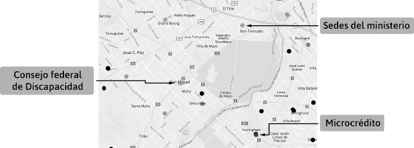
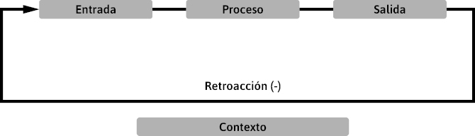
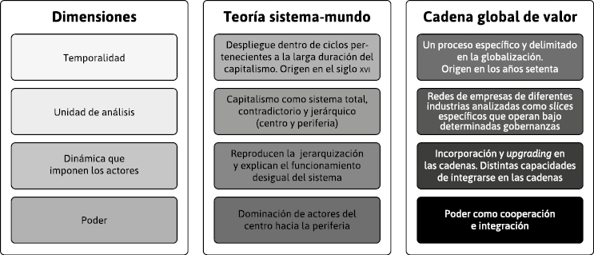

La construcción del conocimiento sobre
los sistemas organizacionales desde un abordaje interdisciplinario y descolonializado: una propuesta de abordaje desde el Sur
Mirtha Anzoátegui, Cecilia Chosco Díaz, Diego Szlechter y Romina Berman
En este capítulo abordaremos el tema de la construcción del conocimiento sobre los sistemas organizacionales. Una serie de inquietudes nos lleva a debatir en las siguientes páginas: ¿cómo se construye el conocimiento sobre las organizaciones?, ¿qué enfoques predominaron en el estudio de las organizaciones?, ¿cómo contribuyeron las perspectivas lógica, racional, heurística, empírica y sistémica?, ¿por qué para entender la teoría organizacional en la Argentina es necesario remitirse a enfoques latinoamericanos, a las “epistemologías del sur” y a la complejidad?
A nivel mundial, desde el siglo xx, el pensamiento asociado a la metáfora de la máquina empieza a desdibujarse como el único posible. En disidencia con este, emerge una nueva metáfora sistémica desde la perspectiva histórica de la administración, que se ha desarrollado en una multiplicidad de ramas. Abarca desde lo biológico hasta lo informacional, y pasa por lo social, económico, histórico, etcétera. De hecho, no podríamos escribir sobre todas las derivaciones que la teoría ha tenido, pero sí nos detendremos para explicar fenómenos globales, teorías dominantes, críticas latinoamericanas, y la emergencia de movimientos antisistémicos.
Para ubicar la discusión, tomaremos como punto de partida a la escuela de relaciones humanas, ya que se han registrado amplios debates, contradictorios, sobre el conocimiento sobre las organizaciones, por dos razones. Una de ellas, porque se la concibió desde el management, una propuesta innovadora y alternativa al taylorismo y al fordismo. La otra razón, debido a la mirada crítica de la escuela de relaciones humanas, la que propone la complementariedad de las corrientes de pensamiento de Taylor, Ford y Mayo, sobre una nueva y mejor manera de hacer las cosas.
Entonces, para poner en diálogo a diversos autores (de la sociología, la economía, la psicología, la biología, la administración, entre otros campos de conocimiento), teorías y formas de conocimiento, el lector podrá advertir niveles de análisis. Algunos, ligados a la explicación de las teorías hegemónicas que dan cuenta de cómo funciona el sistema productivo mundial, la división internacional del trabajo y la jerarquización de los países que participan de ella. Estos modelos muestran que, en el sistema mundial, existen países que asumen la posición de centro y otros de su periferia.
Otros modelos de pensamiento, más cercanos a nuestras latitudes latinoamericanas, expresan nuevo conocimiento y enfoques críticos que indagan sobre cómo se ha generado el conocimiento dominante. En efecto, ayudan a reinterpretar el mundo y las transformaciones políticas, gubernamentales, sociales, económicas, tecnológicas, culturales y organizacionales. Por último, abordaremos distintos análisis que nos permiten comprender que el conocimiento se crea permanentemente, a cada instante, y que por lo tanto no existe una única y mejor manera de hacer y conocer, sino múltiples y diversas.
Al terminar el capítulo, proponemos leer la reflexión final y repasar los contenidos siguiendo una serie de consignas, a partir del material audiovisual de los principales referentes y sus discusiones.
Las investigaciones del Laboratorio de Fatiga nos muestran un número de factores independientes en equilibrio, un cambio en las condiciones externas, y un cambio a través de la organización completa que es el organismo. En presencia de semejante cambio, el individuo puede ser capaz, en virtud de una mutación del equilibrio interno, de seguir adelante sin esfuerzo ni daño […] El experimento de la Western Electric [se circunscribió] en primer lugar, no a las condiciones externas, sino a la organización interior. Fortaleciendo el equilibrio interno “temperamental” de las obreras, la compañía les permitió lograr un “estado de equilibrio” mental que ofreció gran resistencia a una variedad de condiciones externas (Mayo, 1993: 228-229).
Desde la perspectiva del management, la escuela de relaciones humanas y, en particular, la experiencia de Hawthorne, se tornó en una estrategia necesaria para responder a las necesidades del empresariado de la sociedad estadounidense, entre los años veinte y los cuarenta. Los aportes de la escuela son considerados ideas bisagra en el estudio de la administración, ya que investiga el impacto generado en la organización a partir de la interacción entre los individuos (estudios de la personalidad), los grupos, las estructuras y el entorno. El objetivo propuesto estuvo ligado al estudio de las condiciones ambientales industriales a fin de “mejorar el ámbito laboral” y conseguir mayor productividad. Este enfoque surge como una reacción a los enfoques clásicos, y sus orígenes se relacionan con las discusiones del Círculo de Pareto, en Harvard, en el que importantes académicos como Homans, Parsons y Mayo, entre otros, trazan un vínculo con la teoría organizacional al estudiar las nociones de los sistemas organizacionales en equilibrio.
Rescatamos, como punto de partida, una de las investigaciones de Elton Mayo, el experimento de Hawthorne en la Western Electric Company, entre 1927 y 1932. En aquella época, Estados Unidos había alcanzado un avanzado desarrollo industrial sin tomar en cuenta las condiciones de trabajo de la clase obrera. Las empresas se encontraban frente a una disminución de la tasa de ganancia y un amesetamiento en los niveles de productividad. La fábrica atravesaba una situación crítica: la fatiga, la monotonía y la desmotivación de los trabajadores y trabajadoras no podían ser explicadas.
El paradigma imperante en la época sostenía que la ciencia tenía la capacidad de mejorar el ambiente de trabajo para aumentar la productividad. En ese contexto, Mayo es contratado como consultor de la empresa, ya que era parte de un grupo de teóricos que trataba los problemas de adaptación al llamado “nuevo ambiente industrial”. Aún el Estado no se involucraba en la economía. Recién con el surgimiento del Estado-plan, a principios de la década del treinta, se va a encargar de intervenir en la economía estadounidense para compatibilizar las necesidades del capital de aumentar la productividad, con las demandas de justicia social del movimiento obrero (ver capítulo 2).
Por ende, lo que hace el experimento es tratar de recuperar, en el interior del espacio de trabajo, la lógica del mundo doméstico, la lógica de las relaciones de parentesco, de las relaciones de amistad; los afectos habían sido dejados de lado e incluso Ford tenía su propio Departamento de Sociología para disciplinar a los trabajadores en sus propias casas. Según Mayo, esto no va más, todas las formas en que las relaciones afectivas emergen en cualquier relación de amistad por fuera del trabajo, pueden ser incorporadas dentro de las organizaciones. El capital se verá obligado a realizar algunas concesiones. Esto empieza a partir de Mayo y se va sofisticando paulatinamente hasta nuestros días, es decir, la integración de la lógica del mundo doméstico al espacio de producción.
El experimento se realiza en el marco de los “felices años veinte”, cuando Estados Unidos era favorecido por el sistema de producción, con lo que acentuaba su ventaja competitiva en un mundo cambiante. Este país se fortalece aún más cuando comienza la dependencia del resto de los países con respecto al dólar estadounidense. Sin embargo, ese crecimiento alcanzaría su límite, lo que comenzó a producir una caída paulatina de la tasa de ganancia. Esto llevó a buena parte del capital a volcarse hacia las actividades financieras, ya que resultaban más rentables. La especulación generó un auge superficial y una crisis financiera que coincidió con los cambios tecnológicos, la aparición de nuevas industrias, la mecanización acelerada, la racionalización del trabajo, la estandarización de la producción y el fuerte proceso de concentración industrial.
En 1927, la Western Electric, empresa dedicada a la fabricación de equipos y componentes telefónicos, se enfrentaba con problemas económicos, como el amesetamiento de la productividad, y sociales, como la alta rotación de personal, el ausentismo y las huelgas. En el Departamento de Montaje de relés de teléfonos, había grupos de jóvenes trabajadoras que ejecutaban tareas simples y repetitivas que dependían, en gran medida, de su rapidez. Las obreras montaban cinco relés cada seis minutos. La empresa estaba interesada en identificar los factores que incidían en la evolución de la curva de productividad.
Es aquí cuando inician las cuatro fases del experimento. En la primera fase, se escogieron dos grupos de trabajo que ejecutaron la misma operación en condiciones idénticas. Uno, que fue denominado “experimental”, trabajó bajo una intensidad variable de luz; el otro, “de control”, bajo una intensidad constante. En principio, el propósito del experimento fue encontrar el efecto de la iluminación sobre el rendimiento de los obreros; el resultado inmediato fue que no había relación directa entre las variables.
La segunda fase del experimento tuvo como objetivo la verificación de la fatiga en el trabajo. El cambio de horarios así como la introducción de intervalos de descanso fueron algunos de los aspectos analizados. En esta fase fueron seleccionadas seis jóvenes con experiencia, cinco de ellas montaban los relés, mientras la sexta suministraba las piezas necesarias para la manufactura. Esta fase se dividió en doce períodos, con el fin de observar cuáles eran las condiciones de rendimiento más satisfactorias. Durante varios períodos semanales, se fueron alternando diversos estímulos en el grupo de trabajo; entre los más destacados, el sistema de pago según el esfuerzo individual, pausas de descanso que se incrementaron de cinco hasta diez minutos, refrigerios, recorte de la jornada laboral, etcétera.
La tercera fase consistió en el programa de entrevistas. Los primeros departamentos en los que se aplicaron fueron el de Inspección y Operaciones, y más tarde, en otros. El programa de entrevistas tenía como fin conocer las actitudes y sentimientos de los trabajadores, escuchar sus opiniones en cuanto a su trabajo y al trato que recibían, y atender sugerencias respecto de los supervisores. En el estudio, se constató que las jóvenes consideraban humillante la supervisión directa, y pese a que la empresa trabajaba con políticas de personal abiertas, había gran indiferencia por parte de la dirección en conocer las necesidades reales de los trabajadores en relación con los supervisores, el trabajo en equipo y la empresa.
Por último, la cuarta fase. Aquí el objetivo fue revisar de cerca la organización informal del trabajo. Se recurrió a un grupo “experimental” de obreros: nueve operadores, nueve soldadores y dos inspectores. El observador se percató de los recursos que utilizaban los trabajadores, de su pertenencia al grupo y de la existencia de liderazgos informales.
El experimento fue suspendido debido a la crisis financiera que eclosionó en Wall Street, en 1929. Esta fue considerada una crisis de oferta que llevó a los empresarios a reducir la producción y a despedir personal, reducir salarios, etcétera, cuestión que contrajo la demanda y agravó la crisis no solo nacional, sino también internacional. Esta última encontraría un cauce recién después de la Segunda Guerra Mundial (ver Rapoport, 2005).
Entre las principales conclusiones de la experiencia, que fueron utilizadas para el estudio de las organizaciones desde la perspectiva managerial –que más tarde dieron lugar a la emergencia de nuevos estudios sobre la motivación, la comunicación y los grupos–, se evidenció que:
1) El nivel de producción no está determinado por la capacidad física o fisiológica del trabajador o trabajadora (teoría clásica), sino por las normas sociales y las expectativas que lo rodean.
2) El comportamiento del individuo se apoya por completo en el grupo. Los trabajadores y trabajadoras no actúan ni reaccionan aisladamente como individuos.
3) Los obreros y obreras que producen muy por encima o muy por debajo de la norma socialmente determinada, pierden el afecto y el respeto de los demás. El comportamiento de los trabajadores y trabajadoras está condicionado por normas y estándares sociales.
4) En Hawthorne, los investigadores se concentraron en los aspectos informales de la organización. La empresa pasa a ser una organización social compuesta por grupos sociales informales, cuya estructura no siempre coincide con la formal (con los propósitos y estructura definidos por la empresa). Los grupos informales definen sus reglas de comportamiento, sus recompensas y sanciones sociales, sus objetivos, su escala de valores sociales, sus creencias y expectativas, y cada participante los asimila e integra en sus actitudes y su comportamiento. La teoría de las relaciones humanas esboza el concepto de organización informal: la organización se compone del conjunto de personas que se relacionan espontáneamente entre sí.
5) En la organización es muy importante tener en cuenta los aspectos y las decisiones que tiene el personal para enfocar y establecer las relaciones humanas.
6) Elton Mayo llega a la conclusión de que a mayor interacción, mayor será su capacidad productiva.
7) Los estímulos (iluminación, refrigerios, descansos, retribución, etcétera) no producen una reacción en el personal.
8) Con el experimento se pudo comprobar que si el trabajador y la trabajadora se sienten contenidos afectivamente, serán más productivos a la hora de trabajar.
La forma en que Elton Mayo presenta el experimento en los talleres Hawthorne, y sus consecuencias, se parece a un mundo en el que se ha logrado finalmente encontrar la armonía en lo que, en esa época, se conocía como el “nuevo ambiente industrial”, que prometía la posibilidad de lograr una armonía en las relaciones entre capital y trabajo. Pero para poder tener una comprensión cabal de esto, consideramos necesario identificar su génesis histórica.
En el filme Tiempos modernos, de Charles Chaplin, que retrata a mediados de los años veinte a la sociedad estadounidense, se muestran las consecuencias del trabajo fordista-taylorista, tanto a nivel colectivo como individual. A nivel individual, se refleja a un trabajador alienado, fatigado, enajenado. Las consecuencias de carácter colectivo son representadas a través de las huelgas y la conflictividad social en las calles. Una manera de analizar la historia del capitalismo, en general, y de la teoría de la organización, en particular, es en términos de los beneficios que otorga el capital para lograr la ansiada armonía. Una visión alternativa es analizarla a partir de la protesta y la resistencia que generan los tipos de organizaciones que el capitalismo produce a lo largo del tiempo. Evidentemente, lo que proponía como organización de trabajo el modelo taylorista-fordista generaba no solo consecuencias de carácter individual, como las enfermedades, sino también aquellas de carácter colectivo, como huelgas y ausentismo generalizado, y altos índices de rotación. La huelga y la protesta hacen que el capital tenga que ofrecer algún tipo de concesión, aunque sea de forma parcial.
Un buen ejemplo de ello lo podemos ver en el caso del fordismo y el surgimiento del Estado-plan, analizado en el capítulo 2. ¿Por qué en el contexto fordista el Estado decide intervenir en la economía? El Estado social y benefactor viene a ocupar la escena nacional en los Estados Unidos porque el capitalismo corría el riesgo de depredarse a sí mismo; en algún momento, el “ejército industrial de reserva”,17 representado por la masa de inmigrantes sin especialización y calificación que recientemente había llegado a los Estados Unidos, se iba a agotar.
En este contexto, Coriat (1994b) nos cuenta que los Estados Unidos recibieron la masa más grande de inmigración de la era moderna en dos oleadas migratorias: una, a partir de 1815 y la segunda, a fines del siglo xix. En esas migraciones arribaban muchos “revoltosos”, con ideas revolucionarias. Si bien en determinado momento en Inglaterra, entre otros países, existió una ley que les prohibía salir del país para que engrosaran el ejército industrial de reserva en las ciudades de Manchester y Liverpool, entre otras, luego, las revueltas de esos trabajadores llevaron a que se anule esa ley y se les permitió salir del país a irlandeses, escoceses e ingleses, quienes emigraron a los Estados Unidos y llevaron consigo sus ideas, muchas de ellas anarquistas, socialistas y revolucionarias.
En la Argentina existió la Ley de Extranjería, promulgada a principios del siglo xx, que permitía expulsar del país a los inmigrantes que se involucraban en actividades que el Estado considerara revolucionarias. A pesar de haberse convertido en ciudadanos argentinos, se los podía devolver a sus países de origen.
Si se contrataba permanentemente a los niños como método de disciplinamiento de los trabajadores adultos, se iba a aniquilar a la futura generación de asalariados, lo que obligaría al Estado a recurrir a inmigraciones masivas de forma permanente. Es ahí cuando el Estado acude en ayuda del capital para sentar en una mesa de negociación a los sindicatos, al empresariado y al propio Estado, para generar un tipo de acuerdo social con el fin de morigerar los efectos devastadores que tenía el capital sobre la población en general. Era necesario disminuir y atenuar –no eliminar– los efectos negativos de la industrialización precoz en los Estados Unidos y para ello se implementaron, entre otras cosas, el salario indirecto y la ley de educación obligatoria para los niños, para que, en lugar de trabajar, acudan a la escuela.
Hasta la época de la escuela de relaciones humanas, existía solamente una teoría que tenía la capacidad de explicar toda la realidad social que se vivía en el mundo: la teoría marxista. ¿Qué es lo que decía el marxismo en el siglo xix? El capitalismo generaba, de manera inexorable, un tipo de división del trabajo a nivel local, nacional e internacional, que en algún momento iba a generar un antagonismo tal que llevaría a la lucha de clases, la revolución y posterior dictadura del proletariado. Dicho de manera muy simple, Marx sostenía que el lugar que los hombres ocupan en el proceso productivo determinaba su conciencia. ¿Qué quiere decir esto? Las sociedades capitalistas se organizan a partir de la propiedad privada de los medios de producción. Esta apropiación es desigual: implica que los dueños de los medios de producción (maquinaria, fábricas) establecen una relación de explotación hacia aquellos hombres y mujeres que solo poseen su fuerza de trabajo y deben entregarla a cambio de un salario. Para el marxismo, cada clase social mantiene su propio interés y sus objetivos son irreconciliables: mientras que la clase capitalista buscará perpetuar esta forma de organización socioeconómica para maximizar su beneficio, la clase trabajadora deberá organizarse para derribar las injusticias existentes y alcanzar una sociedad más justa e igualitaria. Este tipo de división del trabajo iba a generar necesariamente, en forma paulatina, un mayor antagonismo entre las clases sociales.
El trabajo, es decir, la población de trabajadores, tiene que tomar conciencia de clase, conciencia de lo que realmente son, de la relación de explotación que sufren, lo que va a llevar, en algún momento, a que estalle esta relación y tomen el poder de los medios de producción y del propio Estado. Esto conducirá a la dictadura del proletariado, como un movimiento de transición hacia el objetivo final de la anulación del Estado y del reino del comunismo, en el que primará la igualdad total entre los individuos. Si bien en algún momento iba a dejar de existir el Estado, en una primera etapa este era necesario para que luego se inmole a sí mismo, a fin de dar lugar a una sociedad sin clases. Esto implica una noción teleológica de la historia, en la que lo que se trata es de encontrar una ley que marque el destino de la historia. El antagonismo de clase va a llevar necesariamente a la revolución: esto es lo teleológico, ya que se trata de encontrar una ley que permita no solamente describir el presente, sino prever el futuro. Para Marx era inexorable la dictadura del proletariado, no había manera de que no suceda.
En este sentido, la tesis de Marx constituye una teoría abarcadora de lo social, explicativa del mundo. Este tipo de modelos eran tendencia en su época. Unos años después, el modelo de la física de Einstein intentaba encontrar lo que él llamó “la teoría sobre todo” y se murió sin descubrirla: su objetivo era unir la teoría de la relatividad de los grandes cuerpos con la teoría cuántica, que explica la física de los pequeños tamaños. Einstein pretendía unir las dos en una teoría sobre todo, en el sentido de tratar de explicar toda la naturaleza de los cuerpos, desde los más grandes hasta los más pequeños, en una teoría abarcadora. El “espíritu de época” que subyacía, desde mediados del siglo xix hasta después de la Primera Guerra Mundial, era el de tratar de explicar totalidades, desde la física de Einstein hasta las ciencias sociales de Marx.
Los círculos intelectuales de las universidades de elite empezaron a pensar en una teoría que lograse enfrentar a la marxista con la misma robustez, tratando de explicar la totalidad social en términos teleológicos, si bien con otra visión de futuro. Así, surgió la teoría de Wilfredo Pareto, de la misma Universidad de la que salió Elton Mayo –Harvard–, que viene a proponer la teoría del equilibrio sistémico social. En lugar de buscar un marco explicativo al antagonismo de clase, esta teoría centrará sus esfuerzos en la búsqueda de la armonía y la cooperación entre las clases sociales en un intento por explicar los fundamentos teóricos de la armonía.
De esta manera, el “nuevo ambiente industrial” surge como una gran teoría opuesta a la marxiana. ¿Qué diría Marx de ese nuevo ambiente industrial? Que es una máscara, una fachada que esconde la relación de explotación con el ejercicio de la violencia, pero de manera dulcificada. Si, según Marx, la relación capital-trabajo es antagónica por naturaleza, entonces la armonía emerge como una visión opuesta a ese antagonismo. Existen otras teorías, que surgen con posterioridad, y que se ubican entre estas dos corrientes de pensamiento. Las ciencias sociales no van a dejar de ser críticas, pero se van a apartar un poco del “dogma” marxista, porque observan que la realidad demuestra que la teleología marxiana puede no sobrevenir nunca. La ley de la historia puede no cumplirse nunca; la ley de la naturaleza descubierta por Darwin no se puede trasladar a la sociedad. ¿Por qué? Porque la vida social es mucho más incierta que la de la naturaleza, es muy difícil saber hacia dónde se va a dirigir la sociedad, la relación entre el capital y el trabajo puede no estallar nunca, lo antagónico no puede ser el único factor explicativo, porque no puede explicar, por ejemplo, por qué hay trabajadoras y trabajadores que siguen estando alineados con los objetivos de las empresas y del capital.
Entonces, es necesaria otra teoría que lo explique. Marx diría que estos trabajadores poseen falsa conciencia18 y en algún momento tomarán conciencia de su clase, solo hay que hacer que se den cuenta de su condición de explotación porque solos no pueden.
Lo que descubren las ciencias sociales que se apartan del dogma marxiano es que el conflicto entre el capital y el trabajo puede ser administrado y perdurar en el tiempo. ¿Por qué? Por diversas razones, una de ellas es que el capital necesita hacer permanentemente concesiones parciales, porque quizás deba enfrentarse a un movimiento sindical combativo pero sin el objetivo de la toma del poder. El marxismo más ortodoxo nunca reconoció las concesiones que tuvo que hacer el capital para llegar al Estado de bienestar europeo. En él, el capital tuvo que realizar concesiones muy importantes, ya que tuvo que resignar rentabilidad. Se sentó en una mesa de negociación con el movimiento sindical europeo, que era lo suficientemente fuerte como para obtener una importante porción de la plusvalía. Pero, también los sindicatos tuvieron que realizar concesiones; se pudo administrar el conflicto entre las partes y cuando el conflicto se puede regular o administrar, puede prolongarse en el tiempo sin estallar, puede mantenerse incluso de manera larvada, es decir, latente, invisibilizado, a fuego lento e incluso podemos encontrar trabajadores satisfechos y felices, y prolongar la relación ad eternum y sin que alguna vez sobrevenga la revolución proletaria, no porque el capital sea benevolente, sino porque se encuentran maneras de regular y administrar el conflicto.
Dentro de estas grandes teorías globales explicativas de lo social, Elton Mayo se ubica en la teoría de sistemas (que no es lo mismo que la teoría general de sistemas que veremos más adelante), que va a procurar la armonía y el equilibrio en la sociedad al promover pequeños cambios necesarios para sostener al sistema. ¿Por qué pequeños? Porque los grandes cambios eran propios del marxismo. A diferencia de este, la teoría de sistemas acepta pequeños cambios que logren mantener el balance, el equilibrio. Cuando se analizaron los principios de Taylor, en el capítulo 2, uno de ellos estaba en consonancia con esta búsqueda del equilibrio. En efecto, Taylor realmente buscaba la cooperación con los obreros para ejecutar el trabajo de acuerdo a principios científicos. Los métodos que utilizaba para lograrlo eran diferentes; él necesitaba que los trabajadores entendieran que si seguían sus principios científicos, se fatigarían menos y ganarían un mejor salario como consecuencia del aumento de la productividad. Buscaba cierta armonía, cierta complicidad de los trabajadores, por eso Taylor tenía que ser aparentemente menos brutal para lograr la cooperación sostenida de los obreros.
En esa misma época encontramos a Chester Barnard –autor que comparte los postulados del experimento de Mayo–, quien escribió un libro en 1938 titulado Las funciones del ejecutivo (The functions of the executive). ¿Qué decía Barnard? Él tenía un pensamiento similar al de la sociología de Émile Durkheim. Durkheim vivió en Francia a principios del siglo xx y su pensamiento tenía muchas cosas en común con la teoría de los sistemas. Según el autor, los sistemas eran muy importantes y beneficiosos para la sociedad porque si existían instituciones fuertes, es decir sistemas de valores consolidados, los individuos tenían la capacidad de incorporarlos para una mejor convivencia social, ya que la adscripción a normas sociales legitimadas podía llevar a una convivencia social armoniosa. Pero Durkheim no veía este objetivo en términos individualistas, sino en términos de explicaciones más generales de la sociedad.
¿Qué decía Chester Barnard? La clave de la búsqueda de la armonía radica en la administración de la organización informal por parte de los ejecutivos; él reconocía que, más allá del organigrama y de la jerarquía formal, había una organización informal emergente dentro de los trabajadores y, por lo tanto, lo que había que hacer era administrar esa organización informal, no combatirla. A principios del siglo pasado, Ford decía que el trabajador no estaba para intercambiar correspondencia, ni para generar camaradería. Pero las ideas de Ford en torno a un trabajador obediente y desmovilizado ya no pueden ser defendidas, porque en la década del veinte, cuando convocan a Elton Mayo a llevar a cabo el experimento Hawthorne, el modelo fordista-taylorista había empezado a estancarse en términos de productividad, al tiempo que la conflictividad social iba en aumento y se empezaron a dar cuenta de que era preciso prestarle atención a los aspectos informales, no solo a los formales.
Por ese motivo, Barnard habla de sistemas sociales cooperativos. ¿Qué son los sistemas sociales cooperativos? Según el autor, son fuerzas sociales, biológicas y físicas que tienen que estar conscientemente coordinadas, cuyo balance interno y externo debe mantenerse en equilibrio. ¿Cuál es la conclusión de Barnard en su libro Las funciones del ejecutivo? Las finalidades generales de la organización tienen que estar por encima de los intereses particulares, y debe establecerse un balance entre las restricciones que impone la organización formal y la demanda de los grupos informales, o sea, lo formal y lo informal tienen que estar balanceados y la función del ejecutivo es que los trabajadores se identifiquen con los intereses de la empresa. Por eso es muy importante que, en el ejercicio de la autoridad, se logre la cooperación, pero ya no a través de la coerción. Lo que pretende Chester Barnard es que el ejecutivo genere las condiciones para que los trabajadores estén alineados con los intereses de la empresa, “que se pongan la camiseta” y pasen a formar parte de la empresa, y eso se logra con cooperación, no con coerción. Si, emulando a Ford, el ejecutivo caminara por los pasillos de la planta con una pistola bien visible en el cinturón, no lograría la identificación de los trabajadores con la empresa; en este sentido, el sistema de Ford había encontrado un techo en su productividad y había generado un aumento en la conflictividad social. En 1929 sobreviene la crisis económica en los Estados Unidos y estallan las huelgas, vuelve el ausentismo generalizado, la alta rotación, y se hace necesario crear un sistema más “amigable” con los trabajadores y las trabajadoras. En este contexto, Barnard le otorga una tarea esencial a los ejecutivos, ya que eran los representantes del capital, los gerentes, encargados de lograr la armonía y el equilibrio en el interior de la organización.
En su crítica a la escuela de relaciones humanas, Ibarra Colado señala que la teoría de la organización sufre de una esquizofrenia intelectual. ¿Qué es la esquizofrenia? Vivir en mundos paralelos, desconectados entre sí. ¿Por qué? Por un lado, la teoría de la organización se toma a sí misma como expresión de la cooperación humana, pero a su vez se constituye también como un sistema de control para encauzar el conflicto. ¿Para qué? Para asegurar el apoyo a los objetivos de la firma. De esta manera, la teoría de la organización va a estar cabalgando permanentemente entre la expresión humana de las relaciones sociales que emergen en una organización y la necesidad de canalizar el conflicto en beneficio de la empresa. En rigor, Ibarra Colado dice que la teoría de la organización nunca puede resolver este dilema; cuando surge el conflicto, debe trabajárselo en beneficio del capital. No tiene manera de resolverlo.
¿Qué se deriva del experimento Hawthorne? A partir de sus conclusiones es posible empezar a comprender todas las teorías sobre las nuevas formas de la organización del trabajo que nos llevan a nuestros días, ya que en mayor o en menor medida todas tienen su origen en los descubrimientos de Elton Mayo. En un primer momento, Mayo no estaba buscando lo que descubrió; cuando lo convocan desde la empresa Bell, en Chicago, a realizar el experimento, lo hacen porque existía un problema de productividad en la planta: había dejado de aumentar. Mayo va a aplicar sus conocimientos de psicología y sociología porque su objetivo era aplicar el mismo método de las ciencias exactas y naturales en el espacio del trabajo.
En esa época, el positivismo dominaba el campo de las ciencias sociales. Durkheim, cuando trata de aplicar en Francia su propia teoría sociológica en relación con el tema del suicidio, utiliza como método analizar el fenómeno despejando las circunstancias individuales que llevan a la gente a suicidarse, ya que lo que pretende es ver grandes tendencias sociales: ¿por qué en un país la gente se suicida más que en otro?, ¿por qué en determinado momento del día la gente se suicida más?, ¿por qué los miembros de una religión se suicidan más que otros?, etcétera. Las ciencias sociales pretendían emular a las ciencias exactas y naturales con el pretexto de encontrar leyes tan universales como en el funcionamiento de la naturaleza. Esto derivó en una suerte de “complejo de inferioridad” de las ciencias sociales y, para lograr mayor legitimidad social en el ámbito científico, era necesario copiar el método de las ciencias exactas cuyo estatus de verdad era más elevado. En ese momento, “la verdad” se descubría por medio de las ciencias naturales y exactas.
La postura de Durkheim era compartida por Marx, ya que en su propia búsqueda de la ley de la historia, la teleología marxiana sostenía que el capitalismo necesariamente precedía al socialismo. Es famosa la carta que Marx le escribió a Bolívar. Marx no solo escribió sobre la situación en la India, sino también sobre la que vivía Latinoamérica, como dos casos que pueden llegar a explicar el retraso en la revolución proletaria. Marx le escribe a Bolívar diciéndole que Latinoamérica debe dejarse subyugar por España, para que puedan desarrollarse las fuerzas productivas que harán emerger una burguesía que, a su vez, generará el suficiente antagonismo que llevará a la revolución proletaria. Respecto de la India, sostenía la misma tesis; proponía que permitiese ser dominada por Inglaterra. La forma mecánica de leer la historia tiene mucho que ver con este complejo de inferioridad que tenían las ciencias sociales respecto de las ciencias exactas.
Era necesario copiar ese método y hacerlo válido para aplicarlo al conocimiento de la realidad social. Por eso Elton Mayo lo primero que procura en el experimento es tratar a los trabajadores y trabajadoras como si fuesen los perros de Pavlov.19 En este sentido, propuso experimentar con el nivel de iluminación de los talleres, luego con la cantidad de refrigerios, los descansos, hacer pruebas como si estuviese experimentando con animales. Ese era, al menos al principio, el método de Elton Mayo. ¿Qué pretendía la psicología y la sociología de esa época? Planteado al revés: ¿qué pretendía la psicología no positivista? Freud procuraba la liberación del sujeto, de sus vicios, miserias, etcétera, es decir la emancipación individual. Mayo, muñido de las herramientas de la psicología y la sociología positivistas, procurará mejorar la productividad. La psicología y la sociología aplicadas tienen pretensión de amoralidad, de neutralidad, de estrictamente “científicas”, pero Mayo se sorprende porque descubre algo diferente de lo que estaba buscando en un primer momento. Él se pregunta cómo puede ser que al reducirles la iluminación, los trabajadores sigan aumentando la productividad. Según su propio paradigma positivista, si se empeoran las condiciones y el medioambiente de trabajo, la productividad también debería empeorar.
Consecuentemente, puede haber dos interpretaciones posibles de las conclusiones del experimento: una subjetiva y otra de carácter intersubjetivo. ¿Cuál es la explicación subjetiva? El rendimiento depende de la motivación. Los trabajadores y trabajadoras que se sienten mejor, rinden mejor. De aquí saldrán todas las teorías conocidas de satisfacción de necesidades. La explicación intersubjetiva implica, en cambio, que el rendimiento también depende de la cohesión del grupo primario. Son dos conceptualizaciones teóricas bastantes diferentes, ya que una se basa en la teoría de los grupos y la otra en el individuo. Mayo es un precursor de todas las teorías de la motivación que conocemos hasta la actualidad. Todas se nutren, en mayor o menor medida, de los hallazgos del experimento de Mayo. Todas estas teorías se plantean cómo hacer para que el trabajador se encuentre más motivado. Esto no tiene que ver con una nueva actitud benevolente hacia el asalariado, sino con la necesidad de trabajadores más productivos.
Por otro lado, ¿cómo lograr la cohesión del grupo primario? Otro ejemplo ilustrativo es la investigación realizada a fines de la década del cuarenta, en Inglaterra, en unas minas de carbón, por los investigadores Trist y Bamforth, del Instituto Tavistock. Estas minas tenían problemas de productividad, lo que preocupaba a sus propietarios. Estos investigadores encuentran que los mineros tenían turnos rotativos, a veces trabajaban a la mañana, a veces a la tarde, etcétera. También observaron que en las minas se trabajaba muchas horas y cuando los rotaban en los turnos, la composición de los equipos de trabajo variaba, ya que al cambiar los equipos cambiaban los turnos. Ellos proponen mantener los turnos y la composición de los equipos. Lo que observaron es que al hacer esto aumentó mucho la productividad. De aquí extrajeron las referencias empíricas para elaborar la teoría de los sistemas sociotécnicos, vinculada a los resultados del experimento de Elton Mayo. La teoría de los sistemas sociotécnicos sostiene que la tecnología por sí misma no puede explicar la productividad, ya que las organizaciones son sistemas técnicos pero también sociales. ¿Cómo puede ser que con la misma tecnología de extracción del carbón, la mina ahora era más productiva? Porque la tecnología “dura” no lo explica todo, hay tecnologías sociales, blandas, por ejemplo, la distribución de los turnos de trabajo o la composición de los grupos, que influyen muchísimo en la productividad.
¿Qué nos dice de todo esto Ibarra Colado? La idea principal del autor está basada en la “tesis de la complementariedad teórica”. ¿Qué significa esta tesis? Ninguna de las corrientes de pensamiento organizacional viene a romper paradigmáticamente con la anterior; Ford no viene a romper con Taylor, Elton Mayo no viene a romper con Ford, y así sucesivamente. Todos se van a complementar, unos se montan sobre otros, pero se van a mostrar de manera disruptiva y revolucionaria. Todos van a pretender, ya sea Taylor, Ford o Mayo, establecer una nueva y mejor manera de hacer las cosas, de alcance universal, para todas las empresas del mundo, no importa el rubro. Sus teorías vienen a romper con la anterior. Ibarra Colado señala que esto no es tan así, ya que hay complementariedad teórica, no hay rompimientos paradigmáticos.
¿Qué es un paradigma? Es una forma de pensar imperante en una época, una idea central, una hipótesis ampliamente compartida, una especie de conjunto de pensamientos y corrientes de ideas con un denominador común. Mayo, Pareto y Maslow (creador de la pirámide de las necesidades) tienen cosas en común, sistemas de pensamiento compartidos, porque en esa etapa de la historia había cierto espíritu de época que sobrevolaba y muchos pensadores compartían ciertos postulados teóricos. Esto significa que había un paradigma imperante, que obviamente no cayó del cielo sino que estaba directamente vinculado con los cambios en el proceso y la organización del trabajo. ¿Qué paradigma era? El paradigma de la armonía, la posibilidad de alineamiento de los intereses del capital y los del trabajo, imperante en la época y que perduró, incluso, hasta nuestros días. La tesis marxiana del antagonismo ya era menos aceptada porque veían que el conflicto se sostenía en el tiempo. La crítica que subsiste hoy en día, y que apunta a la tesis de la “armonía”, es la tesis de la administración del conflicto, que no trata de ocultar sino darle visibilidad al conflicto, pero sin tener una mirada teleológica del destino de la historia.
Ibarra Colado va a sostener que el capitalismo intenta permanentemente invisibilizar el conflicto y el ejercicio del poder. El poder trata de negarse a sí mismo para ser más eficaz. ¿Qué significa “más eficaz”? El ejercicio despótico del poder no funciona, el obrero se resiste. Es más eficaz imponerle a un grupo de trabajo cuotas de producción y que el mismo grupo decida cómo distribuir el ritmo de trabajo. Los premios y castigos pueden ser grupales. Ahora el que va a estar vigilando el trabajo, en lugar del jefe, es un compañero del mismo grupo. Una cosa es ejercer la autoridad de manera individual por medio de la violencia, lo que genera mucha resistencia, y otra cosa es que el jefe otorgue autonomía en la distribución del trabajo en la medida en que la cuota de producción se logre de manera colectiva, con el trabajo en equipo. Esto va a ser mucho más eficaz.
Cuando Ibarra Colado dice que el poder se niega a sí mismo para ser más eficaz, no es que el poder pretenda anularse, sino que se quiere invisibilizar, porque el objetivo primordial es el que impone la empresa. Por esto, el autor dice que la escuela de relaciones humanas es complementaria a la organización científica del trabajo. La tesis que sostiene que una viene a romper con la otra es totalmente falaz, ya que ambas se complementan. ¿En qué sentido se complementan? La organización científica del trabajo taylorista sostiene que la productividad es función de habilidades físicas. Al estudiar científicamente los movimientos corporales, era posible establecer cómo debe moverse un trabajador para fatigarse menos y producir más. Su objetivo era estudiar científicamente los movimientos para establecer ritmos de producción.
En este sentido, Ibarra Colado va a sostener que la escuela de relaciones humanas es más de lo mismo, ya que se basa en la misma fórmula que el taylorismo, es decir que la productividad es función de la habilidades, pero no físicas sino sociales. Por ese motivo, a Taylor le interesaba la organización formal, es decir, la jerarquía. Por un lado están los que planifican el trabajo y, por el otro, los que lo ejecutan. A Mayo le interesaba la organización informal, ya que hay que prestarle atención a las habilidades sociales, porque necesariamente se generan vínculos, relaciones, afectos entre los trabajadores y entre las trabajadoras, pero el foco siempre está en la productividad y no en la “felicidad”.
Tal como dijimos en el capítulo 2, Coriat (1994b) sostenía que el pensamiento económico del taylorismo nos permite entender a Mayo. ¿Por qué? Porque Mayo le hubiese dicho a Taylor que había descubierto que, más allá de la organización científica del trabajo, si los trabajadores y trabajadoras están satisfechos, esto mejora la productividad. Probablemente, Taylor le hubiese dado la razón a Mayo porque uno no se contradice con el otro. Es decir, pueden medirse tiempos y movimientos a la vez que se procura mantener a los obreros contentos. El objetivo de Taylor era mejorar la productividad, entonces si el grupo autónomo se lo puede proporcionar, lo aceptaría. En su época, solo con el estudio de tiempos y movimientos, Taylor logró aumentos significativos en la productividad, porque lo que abandonaba era el sistema de trabajo artesanal.
Ibarra Colado va a señalar que Mayo no desdeña la habilidad técnica, ni siquiera dice que no existe, sino que divide la variable “habilidad” en dos, una técnica y otra psicosociológica. Taylor y Ford no le prestaban atención a las relaciones sociales que emergían entre los trabajadores y trabajadoras; todo lo contrario, Ford no quería que se hicieran amigos, porque eso podía perjudicar a la hora de brindar testimonio contra un compañero de trabajo. Ibarra Colado va a señalar que Elton Mayo se dio cuenta de que, al analizar la organización informal, se logra analizar al poder real, ya que el poder está más allá del organigrama y de la jerarquía; y es posible, además, identificar los liderazgos que emergen de manera natural, y también se pueden identificar cuáles son las trabajadoras y los trabajadores más consultados, todas cuestiones que la organización formal no muestra. La organización formal va a mostrar que aquellos identificados como líderes informales son meros subordinados, al igual que sus compañeros y compañeras del mismo nivel jerárquico. Si se analiza la organización informal, es posible identificar el poder real.
Otra de las cuestiones que menciona Ibarra Colado es la pretensión que tiene la escuela de relaciones humanas de llegar a una comunidad de intereses entre capital y trabajo, vinculada a las cuestiones de la armonía y el equilibrio. Mayo cree necesario hacer sentir a los trabajadores que todos reman para el mismo lado, que todos están buscando el mismo objetivo y que si todos se esfuerzan, van a lograr el éxito. El propósito es que todos tiren para el mismo lado y esto se logra a través del ejercicio de un poder no coercitivo, un poder que no requiera de la utilización de la fuerza.
Mayo sintetiza los problemas fundamentales de la empresa en tres, los primeros dos vinculados al modelo taylorista y el tercero es propio de la escuela de relaciones humanas. El primero habla de la aplicación de la ciencia y la habilidad técnica para producir un bien material; el segundo implica la manera de ordenar sistemáticamente las operaciones para producirlo, y el tercero es la forma de organización del trabajo en equipos, es decir cómo lograr la cooperación sistémica. Ibarra Colado señalará que estos problemas se vinculan a la necesidad de adaptar el taylorismo y el fordismo a las nuevas condiciones de lucha. Para preservar las ganancias del capital, nacieron nuevas condiciones de trabajo debido al estancamiento de la productividad, el aumento del ausentismo y las huelgas.
A los dos primeros problemas, es decir, la aplicación de la ciencia y la habilidad técnica para producir un bien material y el ordenamiento sistemático en las operaciones, había que sumarle la organización de trabajo en equipos o la cooperación sostenida para preservar las ganancias del capital.
En Ibarra Colado y Montaño Hirose (1986: 59), se enumeran los “mandamientos” de la empresa estadounidense Western Electric: su objetivo es transformar la firma en una entidad mítica, mitológica, y para eso es necesario que los trabajadores adhieran a esos principios:
1) Pagar a todos los empleados por los servicios prestados.
2) Mantener una jornada razonable de trabajo así como las condiciones de seguridad requeridas.
3) Proveer un empleo continuo congruente con las condiciones de negocio.
4) Colocar a los empleados en el mejor puesto de acuerdo con sus habilidades.
5) Ayudar a cada individuo a lograr su progreso en la compañía.
6) Ayudar a los empleados en tiempos difíciles.
7) Promover el ahorro entre los trabajadores.
8) Cooperar con las actividades sociales, atléticas y recreativas.
9) Otorgarle a los trabajadores libertad de expresión con los ejecutivos.
10) Mantener un ambiente cotidiano de amistad.
¿Alguien se puede oponer a esto? Si lo que se busca es que la empresa –es decir sus jefes– tenga legitimidad, con estos mandamientos es posible lograr la adhesión de los empleados. ¿Dónde está la figura del jefe en estos diez mandamientos? ¿Dónde está el poder y el conflicto? No aparecen. En la Western Electric alguien contrataba, alguien ascendía a los trabajadores y alguien los despedía, en toda empresa pasa, pero ahí no está, porque el objetivo es evitar la propagación del conflicto; todos podemos adherir a esos diez mandamientos. ¿Quién no va adherir? Desde el dueño hasta el trabajador más raso va a adherir a ellos. Son principios tan generales, presentados de manera tan dulcificada, que nadie se va a oponer. Su objetivo es transformar las mentes. Hay muchos ejemplos de libros escritos por los padres fundadores de las empresas que se muestran como verdaderos héroes populares. Por ejemplo, el fundador de la empresa Walmart, en los Estados Unidos, Sam Walton, convocaba a sus trabajadores a jurar todas las mañanas por hacer lo imposible para aumentar las ventas de la compañía. La firma muestra a Walton como un héroe popular, como un líder poco menos que “revolucionario”.
Retornando a Ibarra Colado, nos dice que la idea no es poner en cuestión a la Western Electric; nunca se van a poner en cuestión las relaciones de poder en dicha empresa sino que lo que se cuestiona es la falta de motivación de los trabajadores. ¿Cuál es la respuesta? La falta de desarrollo de habilidades sociales, que a su vez provoca desequilibrios personales. ¿Cuál es la causa? La desorganización y la anomia –falta de normas–; entonces, los trabajadores van a necesitar de un cuerpo normativo, los diez mandamientos, y si adhieren a ellos, todo va a mejorar.
Lo interesante del texto de Ibarra Colado es que nos muestra la trastienda de la investigación de Elton Mayo. Ibarra Colado, al describir la función de los capataces del experimento Hawthorne, dice: “Claro está que tu opinión es equivocada, de cierto modo se la vigila mucho más cerca que cualquier época anterior, el cambio se ha producido en la clase de vigilancia” (1986: 62). El poder se niega para ser eficaz.
Es muy interesante lo que no cuenta Mayo y sí nos cuenta Ibarra Colado, ya que Mayo no decía toda la verdad, porque existía un observer room, una sala de observación durante el experimento, donde se ubicaba un supervisor que, en lugar de estar con un látigo pegándole a las trabajadoras, estaba sentado a un costado, medio escondido, observando lo que ocurría y tomando notas “de los hechos importantes”, y gracias a estas anotaciones, despidieron a más de una trabajadora durante el experimento. No toda relación afectiva puede ser funcional al capital; hay determinadas relaciones afectivas que pueden mejorar la productividad y otras que, evidentemente, no.
Por ejemplo, cuando mencionábamos la teoría de la administración del conflicto, un sociólogo estadounidense llamado Michael Burawoy, para realizar el trabajo de campo de su tesis doctoral se proletarizó, es decir, se convirtió en obrero, trabajando ocho o nueve meses en una fábrica. Lo que veía era que los trabajadores negociaban con sus supervisores los niveles de producción. Ellos sabían perfectamente cuánto podían aumentar el ritmo de producción, entonces, año a año negociaban con sus jefes y si ellos sabían que podían aumentar un 30%, negociaban un aumento del 10%. El supervisor llegaba a un arreglo con ellos porque podía mostrar un buen desempeño ante sus jefes: “Logré negociar un aumento del 10% en el nivel de producción”, mientras los obreros, al trabajar a un menor ritmo del que en realidad podían, destinaban el tiempo restante para “jugar” en el espacio de trabajo, en el sentido de tiempo libre, ya sea para tomar café, para charlar, para establecer relaciones afectivas que no son funcionales a la productividad, pero que a su vez formaban parte de la administración del conflicto, lo que demuestra que el conflicto se negocia de manera permanente.
Al respecto, se pregunta Ibarra Colado: ¿es debido a la falta de vigilancia que se incrementó la productividad? De ninguna manera, no solo que el supervisor estaba a un costado, sino que ahora, como se castigaba colectivamente a todas las trabajadoras, las compañeras de trabajo vigilaban a sus propias compañeras, es decir que aumentó la productividad porque aumentó el control; este se hizo mucho más eficaz, no porque ahora tuviesen motivación, sino que en realidad aumentó la vigilancia, porque de lo contrario podían ser despedidas. Ibarra Colado explica que la cooperación de las trabajadoras se logró por persuasión y no por coacción, es decir, se persuade, se convence, pero no se utiliza la fuerza.
En Ibarra Colado (1986: 62), se mencionan algunos casos del experimento. Por ejemplo, el de los relés telefónicos en el período 7: dos obreras que charlaban durante la jornada de trabajo fueron rápidamente reemplazadas; en el período 12 el problema resurgió, pero esta vez las muchachas no fueron reprimidas directamente, solamente se les explicó que el experimento podría fallar por su culpa, incluso podía ser detenido en ese momento, por lo que estas recapacitaron y el experimento continuó sin que se suscitaran más problemas de esta índole.
En Ibarra Colado (1986: 67), aparece un segundo caso que queremos mostrar: el papel del supervisor. Este papel se ha modificado sustancialmente, las actividades que se le encomiendan están ahora determinadas por las políticas y los planes de la organización. El control de las recompensas y sanciones ya no se concentra en la persona de los supervisores, y algunos premios y castigos importantes han sido retirados de sus manos, aunque se ha quedado con algunos, no tan intranscendentes, ya que él puede elogiar a sus subalternos, puede tomar un interés personal en ellos, puede otorgarles la importancia de la recompensa y que conserven su autonomía, no agobiándolos con una supervisión demasiado estrecha, e igualmente puede protegerlos hasta cierto grado de cambios bruscos y arbitrarios efectuados por niveles directivos más altos.
En los ejemplos mencionados se ven claramente las dos caras de la moneda del experimento. Lo que propone Mayo, sin decirlo abiertamente, es despersonalizar el ejercicio del poder, pero, obviamente, hasta cierto punto, ya que no desaparece el jefe, lo que aparecen son normas y esto se liga mucho a la sociología “sistémica” de Durkheim: las personas se tienen que ceñir al cumplimiento de normas, las normas van a generar cierta normalidad en la sociedad, cierto equilibrio, por eso aquí empieza a estar muy presente la idea de la meritocracia. ¿Quién va a merecer un castigo y quién va a merecer un ascenso? Esto va a estar estipulado en las normas presentes en las evaluaciones de desempeño del trabajo; ya no va a ser el jefe quien decida arbitrariamente si ascender o despedir a un trabajador. Ahora van a existir ciertos criterios de productividad a los que los trabajadores se van a ceñir, ya que de lo contrario son pasibles de ser sancionados.
El objetivo es despersonalizar el ejercicio del poder. ¿Por qué? Porque va a ser mucho más eficaz. Con el ejercicio personal del poder despótico habían llegado a un amesetamiento en la productividad y a un aumento de la protesta social; entonces, había que encontrar formas más sutiles, más dulcificadas de ejercicio del poder. ¿Qué mejor que encontrar un sistema de valores como los diez mandamientos de la Western Electric o los criterios de evaluación del trabajo, que sean legítimamente aceptados por los trabajadores, y que a partir de esos criterios y valores ellos acepten ser promovidos o ser sancionados?
La nueva epistemología de los sistemas, entendida como una teoría del conocimiento –muy diferente a la positivista o del empirismo lógico–, se origina en las investigaciones del biólogo austríaco Karl Ludwig von Bertalanffy,20 en 1930.
Su obra es reconocida por diversas ciencias y disciplinas, y se cristalizó con la publicación de su Teoría general de sistemas (tgs), en 1968. La teoría allí presentada se introduce aprovechando el cambio de clima intelectual de la época, ya que estaba de moda la construcción de modelos y generalizaciones abstractas. Emerge desde la comunidad científica moderna que estudia los sistemas, otra forma de investigar y hacer en la psicología, la física, la biología y la sociología. Existe un quiebre del paradigma mecanicista y es necesaria una nueva ciencia que aborde la complejidad de las realidades del mundo. Su objetivo fue integrar distintas visiones científicas a través del diseño de modelos conceptuales.
Esta nueva ciencia, que aborda la complejidad de las realidades, propone que esa complejidad no puede simplificarse, reducirse o analizarse. Ello solo conduce a concebir las interrelaciones entre las partes de un sistema de manera exclusivamente lineal, cuando lo que se debe lograr es que se dejen intactas las interacciones internas y se proceda al estudio del sistema como un todo. Según Von Bertalanffy, se puede hablar de una filosofía de sistemas, ya que toda teoría científica de gran alcance tiene aspectos metafísicos. El autor señala que la teoría no debe entenderse en su sentido restringido, esto es, matemático, sino que la palabra teoría está más cercana, en su definición, a la idea de paradigma de Kuhn.21 La epistemología de sistemas se distancia del positivismo o del empirismo lógico.
Para Arnold y Osorio (1998), Von Bertalanffy señala que la epistemología del positivismo lógico es fisicalista y atomista. Fisicalista, en el sentido que considera el lenguaje de la ciencia de la física como el único lenguaje de la ciencia y, por lo tanto, la física como el único modelo de ciencia. Atomista, en el sentido que busca fundamentos últimos sobre los que asentar el conocimiento, que tendrían el carácter de indubitables. Por otro lado, la tgs no comparte la causalidad lineal o unidireccional, la tesis de que la percepción es una reflexión de cosas reales o que el conocimiento es una aproximación a la verdad o la realidad.
Y, entonces, para Von Bertalanffy, ¿qué es la realidad?
Una interacción entre conocedor y conocido, dependiente de múltiples factores de naturaleza biológica, psicológica, cultural, lingüística, etc. La propia física nos enseña que no hay entidades últimas tales como corpúsculos u ondas, que existan independientemente del observador. Esto conduce a una filosofía “perspectivista” para la cual la física, sin dejar de reconocerle logros en su campo y en otros, no representa el monopolio del conocimiento. Frente al reduccionismo y las teorías que declaran que la realidad no es “nada sino” (un montón de partículas físicas, genes, reflejos, pulsiones o lo que sea), vemos la ciencia como una de las ‘perspectivas’ que el hombre, con su dotación y servidumbre biológica, cultural y lingüística, ha creado para vérselas con el universo al cual está “arrojado” o más bien, al que está adaptado merced a la evolución y la historia (Arnold y Osorio, 1998: 42-43).
Adopta una “filosofía de valores de sistemas” que se preocupa por la relación entre los seres humanos y el mundo, pues señala que la imagen de ser humano diferirá si se entiende el mundo como partículas físicas gobernadas por el azar o como un orden jerárquico simbólico. La tgs no acepta ninguna de esas visiones de mundo, sino que opta por una visión heurística.22
Esta preocupación trascendía en cartas con otros científicos, la discusión pasaba por la necesidad de analizar los fenómenos sociales en términos de sistemas. Leamos un extracto en el que Von Bertalanffy cita a Buckley:
Hay un panorama científico revolucionario (derivado) del movimiento de investigación general de los sistemas, (con un) cúmulo de principios, ideas y ahondamientos que ya han establecido un grado superior de orden y de comprensión científicos en muchas áreas de la biología, la psicología y algunas ciencias físicas. La moderna investigación de los sistemas puede servir a un marco más adecuado para hacer justicia a las complejidades y propiedades dinámicas del sistema sociocultural (Von Bertalanffy, 1989: 6).
Es importante saber lo que sucedía en aquel momento, y más aún, interiorizarnos sobre quiénes eran los promotores de este conocimiento. Se advertía un hartazgo, y una necesidad de justicia y de apertura democrática para el bienestar intelectual. En este frente intelectual, también se alineaban referentes académicos que escribían sobre las organizaciones, como Scott, sociólogo, y Ackoff, economista y filósofo. Esto significa que ya existían análisis de la moderna teoría de la organización.
Otro referente fue Boulding, sociólogo y economista, quien brindándole su apoyo a Von Bertalanffy, escribe en su carta de 1953, lo siguiente:
He llegado casi casi a la misma conclusión que usted, aunque partiendo del rumbo de la economía y de las ciencias sociales, y no de la biología: que hay un cuerpo de lo que ya vengo llamando teoría empírica general, o teoría general de los sistemas, por usar su excelente terminología, de amplia aplicabilidad a muy diversas disciplinas. Estoy seguro de que mucha gente en el mundo ha llegado a posiciones esencialmente iguales a la nuestra, pero están muy dispersos y no se conocen: así de difícil es cruzar los límites entre las disciplinas (Von Bertalanffy, 1989: 13).
Esos límites que menciona Boulding corresponden tanto a distancias en el mundo como a las fronteras intelectuales, que impedían contactarse con otros. Evidentemente, aquellos tiempos no eran favorables para la teoría de sistemas: académicamente, se la daba como increíble, inválida, solo tuvo aceptación en una comunidad académica cerrada.
Para 1954, se encuentran en el Centre for Advanced Study in the Behavioral Sciences23 (Palo Alto), de la Universidad de Stanford, Kenneth Boulding, Anatole Rapoport (biomatemático), Ralph Gerard y Ludwig von Bertalanffy. Allí, entre todos, cuajó el proyecto de una asociación dedicada a la teoría general de los sistemas. El nombre se cambió por uno menos presuntuoso: Sociedad para la Investigación General de Sistemas, y acordaron establecer sedes de estudio en Estados Unidos y Europa. El programa original de la Sociedad decía:
La Sociedad para la Investigación General de Sistemas fue organizada en 1954 para impulsar el desarrollo de sistemas teóricos aplicables a más de uno de los compartimientos tradicionales del conocimiento. Sus funciones principales son: 1) investigar el isomorfismo de conceptos, leyes, y modelos en varios campos, y fomentar provechosas transferencias de un campo a otro; 2) estimular el desarrollo de modelos teóricos adecuados en los campos que carecen de ellos; 3) minimizar la repetición de esfuerzo teórico en diferentes campos; promover la unidad de la ciencia mejorando la comunicación entre especialistas (Von Bertalanffy, 1989: 13-14).
Paulatinamente, en el marco de la Sociedad, fueron surgiendo referentes y teorías. Mencionamos entre ellos: Norbert Wiener y su teoría de la cibernética, como resultado de sus investigaciones con la información y las computadoras; simultáneamente, Shannon y Weaver con la teoría de la información, y la teoría de los juegos según Von Neumann y Morgenstern. Otras teorías ligadas a esta comunidad de conocimiento son la teoría de conjuntos, la teoría de gráficas, de la decisión, la ingeniería de sistemas, entre otras.
Para continuar, nos interesa destacar la noción de sistema abierto que ha sido utilizada en las ciencias sociales y en la teoría de la organización, en particular. ¿Qué es un sistema abierto? ¿Qué es una organización? ¿Qué organizaciones existen? ¿Por qué son consideradas sistemas?
En el campo de la biología, los organismos vivos receptan estímulos de su medio ambiente y en respuesta a ello mantienen diversas relaciones según sus percepciones del mundo. Por eso “un sistema abierto es definido como aquel que intercambia materia con el medio circundante, que exhibe importación y exportación, constitución, y degradación de sus componentes materiales” (Von Bertalanffy, 1989: 146).
En relación con el concepto de organización, retomamos las ideas de Schlemenson, del capítulo 1. En este sentido, es un sistema sociotécnico interpersonal deliberadamente creado para la realización de fines configurados alrededor del proyecto concreto, tendiente a satisfacer necesidades manifiestas y latentes de sus miembros y de una audiencia externa. Esta es una definición abreviada. Lo que interesa resaltar es la característica esencial que contiene de ese sistema abierto: que está inmerso en un ambiente y que mantiene con él relaciones permanentes. Asimismo, en su interior, también está compuesto por elementos, en este caso, subsistemas interrelacionados.
Podemos decir que existe una amplia variedad de organizaciones, como diversidad hay en la vida misma. Nacemos en organizaciones (hospitales, clínicas, sanatorios), nos educamos en organizaciones (colegios, escuelas, institutos educativos, universidades), trabajamos en organizaciones (empresas, instituciones públicas, corporaciones), pasamos nuestro tiempo libre en organizaciones (culturales, sociales, deportivas, políticas). Consumimos, compramos productos y servicios que fabrican o hacen las organizaciones (empresas, cooperativas, supermercados, fábricas). Esto significa que la vida de las personas gira alrededor de las organizaciones. En la sociedad habrá, por un lado, organizaciones privadas, creadas por individuos que no son parte del Estado, y que persiguen el lucro (empresas grandes, medianas y pequeñas, emprendedores), y las que no lo hacen (fundaciones, asociaciones civiles, cooperativas, empresas recuperadas). También habrá organizaciones políticas como los partidos políticos, los sindicatos, los gremios, etcétera. Y organizaciones creadas por el Estado y el gobierno, las denominadas “públicas”: aquellas que formarán parte del aparato gubernamental (las de seguridad nacional, las administrativas y fiscales, las de control, salud y desarrollo social, etcétera) y las empresas estatales.
Dentro de este universo y apelando a la metáfora biológica, se suele decir que existe un ecosistema de organizaciones integrado por poblaciones y comunidades. Entre estas existen relaciones de competencia, solidaridad, coopetencia,24 de poder, de dominación, de antagonismo, de interdependencia, de jerarquía, etcétera. En ese ambiente las organizaciones nacen, crecen, evolucionan, se desarrollan, maduran y, a veces, dejan de existir, para volver a renacer o fusionarse. Entonces, en este marco, se evidencia la diversidad de sistemas abiertos que conviven en su heterogeneidad funcional, su variedad de recursos y multiplicidad de integrantes.
En internet se suelen encontrar plataformas interactivas de búsqueda sobre diversas poblaciones organizacionales en el territorio. Un sitio sugerido es
www.desarrollosocial.gob.ar/mapa, en el que puede hallarse el mapa interactivo del Ministerio de Desarrollo Social, que permite ubicar lugares y organizaciones. Es una plataforma de uso libre desarrollada por el Instituto Geográfico Nacional (ign) en 2013. Se llama Argenmap.
Al ingresar, el buscador solicita que se demarque una ciudad y una opción (adultos mayores, microcréditos, alimentación, soy joven, niñez, monotributo social, etcétera), o bien todas las opciones. En este caso, colocamos “Los Polvorines” , “todas las opciones”, y el mapa final fue el de la imagen 1.

Fuente: www.desarrollosocial.gob.ar/mapa. Opción Los Polvorines, todas las opciones.
Ahora bien, volviendo a la metáfora biológica, podemos decir que los organismos vivientes son dependientes de determinadas condiciones ambientales que les permiten sobrevivir y lograr hacer posible la viabilidad de la especie. Para su funcionamiento biológico necesitan alimento, el que es metabolizado y convertido en una fuente de energía, la que les permite vivir. Luego, muchos organismos desechan esa energía consumida, en forma de materia o en forma de calor. Para, después, volver a empezar el ciclo.
En las organizaciones sucede algo similar, pero no debemos olvidar que en este caso intervienen acciones (a veces planeadas y otras veces emergentes). Las organizaciones tienen una misión, producen bienes y/o servicios, implementan políticas públicas, programas, proyectos, etcétera. Y para ello, necesitan de insumos o elementos que entren en el sistema (materias primas, capital, recursos humanos y tecnológicos, decisiones), que sean asignados a los subsistemas o áreas para ser procesados. Una vez que se procesan los insumos (se metaboliza la energía), salen convertidos en productos, servicios, políticas, programas, proyectos y planes, coherentes con el objetivo del sistema. Dentro de un sistema también pueden distinguirse las salidas intermedias generadas por cada subsistema (área, departamento) y la salida final o resultante del sistema global. Finalmente, teniendo en cuenta que en las organizaciones existe un sistema de control, se entiende que cualquier error y/o desvío debe corregirse mediante la retroacción negativa, que contrarresta la disrupción.
A continuación, se grafica un sistema abierto. Está readaptado y simplificado de la teoría general de sistemas.

Fuente: elaboración propia.
Siguiendo a Ackoff (1992) –citado en la obra de Von Bertalanffy (1989)–, el modelo de sistemas propone una “nueva visión del mundo”, o como dice Peter Senge (1996), el pensamiento de sistemas cambia nuestra manera de interpretar la realidad. Por este motivo, el autor propone mirar el modelo de sistemas como las dos caras de la misma moneda: las diferencias entre la metáfora de la máquina y la del organismo vivo no se explican porque el mecanicismo analice y la teoría de los sistemas sintetice, sino porque esta última combina ambos conceptos de un modo nuevo. Por consiguiente, invierte el orden del pensamiento analítico-lógico propiciado por la metáfora de la máquina por el orden del pensamiento complejo. De este modo, para analizar la realidad debemos, primero, identificar un todo que contenga (un sistema) y del que el objeto que se va a explicar es una parte; segundo, explicar la conducta o las propiedades del todo que contiene; y tercero, explicar la conducta o las propiedades del objeto que va a ser explicado, en términos de su función dentro del todo.
Para cerrar, es necesario hacer una referencia específica en relación con la utilización de conceptos biológicos en ciencias sociales. Leamos una cita de Von Bertalanffy, para comprenderlo mejor:
La teoría funcionalista ha recibido varias expresiones, como las representadas por Parsons, Merton y otros; el reciente libro de Demerath y Peterson (1968) expone muy bien las varias corrientes. La principal crítica al funcionalismo, particularmente en la versión de Parsons que insiste demasiado en el mantenimiento, el equilibrio, el ajuste, la homeostasia, las estructuras institucionales estables, y así sucesivamente, con el resultado de que la historia, el proceso, el cambio sociocultural, el desenvolvimiento desde adentro quedan en mala posición y aparecen si acaso, como “desviaciones” con una connotación de valor negativa. De modo que la teoría parece ser de conservadurismo y conformismo, que defiende el “sistema”, como es, descuidando conceptualmente el cambio social y así estorbándolo. Es claro que la teoría general de los sistemas en la forma aquí preconizada está a salvo de esta objeción, ya que incorpora por igual mantenimiento y cambio preservación del sistema y conflicto interno. Convendrá pues como esqueleto lógico para una teoría sociológica mejorada (Von Bertalanffy, 1989: 204, destacado en el original).
Es necesario tener en cuenta lo destacado en negritas, dado que el autor critica al funcionalismo y su excesiva persistencia en el equilibrio de las estructuras sociales. Para obtener ese equilibrio, se apela específicamente a parámetros de control, homeostasis, revisión y ajuste. Von Bertalanffy se distancia del concepto de equilibrio social, lo encuentra inadecuado, debido a que restringe la cuestión histórica, cultural, política, que no está presente en los organismos biológicos.
En una isla de Alguna Parte, donde los habitantes anhelaban intensamente ir a otro lugar y fundar un mundo más sano y digno, el problema era que el arte y la ciencia de nadar y navegar nunca habían sido desarrollados –o quizás se habían perdido hacia mucho–. Por esto había habitantes que simplemente se negaban siquiera a pensar en las alternativas a la vida de la isla, mientras otros hacían algunos intentos de buscar soluciones a sus problemas, sin preocuparse de recuperar para la isla el conocimiento de cruzar aguas. De vez en cuando algunos isleños reinventaban el arte de nadar y navegar. También, de vez en cuando, llegaba a ellos algún estudiante, y se producía un diálogo como el que sigue:
—Quiero aprender a nadar
—¿Qué arreglos quieres hacer para conseguirlo?
—Ninguno. Solo deseo llevar conmigo mi tonelada de repollo.
—¿Qué repollo?
—La comida que necesitaré al otro lado o donde quiera que esté.
—Pero si hay comida al otro lado.
—No sé qué quieres decir. No estoy seguro. Tengo que llevar mi repollo.
—Pero así no podrás nadar, para empezar, con una tonelada de repollo.
—Entonces no puedo aprender. Tú lo llamas una carga. Yo lo llamo mi nutrición esencial.
—¿Supongamos, como alegoría, que no decimos repollos sino ideas adquiridas, o presuposiciones o certidumbres?
—Mmm…voy a llevar mis repollos donde alguien entienda mis necesidades (Maturana y Varela, 1990: 211).
La comprensión del mundo es mucho más amplia que la comprensión occidental del mundo. Es fundamental entender esto y aplicarlo al estudio de las organizaciones. En nuestra situación cotidiana, nuestra condición cultural, nuestro modo corriente de ser humanos, tendemos a vivir en un mundo de certidumbres, de solidez perceptual indisputada, en el que nuestras convicciones prueban que las cosas solo son de la manera en que las vemos, y lo que nos parece cierto no puede tener otra alternativa. La idea es salir de esa idea de preexistencia, de certidumbre constante, y aceptar nuevas formas de conocimiento a través de las experiencias y percepciones. Es posible afirmar que, en mayor o menor medida, los sentidos inventan las realidades. Pero esas realidades son efectivamente descubiertas por el sistema nervioso. “Ante una percepción vamos a tener una conducta, el sistema nervioso lo que hace es expandir el dominio de posibles conductas al dotar al organismo de una estructura tremendamente versátil y plástica” (Maturana y Varela, 1990: 117).
Algunos autores latinoamericanos nos acercan al tema de conocer desde la acción y la experiencia, lo que es fundamental para comprender el fenómeno organizacional. Tal es el caso de Humberto Maturana y Jorge Varela,25 referentes académicos chilenos que escribieron juntos una de las obras más reconocidas a nivel mundial: Autopoiesis and cognition: the realization of the living, en 1983.
El libro que escribieron dichos autores tuvo un carácter trascendental. Se presenta como una visión alternativa de las raíces biológicas de la inteligencia.
Es central comprender de esta teoría que esa biología del conocimiento parte de la constatación empírica de la imposibilidad de distinguir, en la experiencia, entre ilusión y percepción. Por eso, las “explicaciones científicas no explican un mundo independiente, explican la experiencia del observador” (Maturana y Varela, 1996: 30). Por eso, la directriz es pensar esa circularidad entre la acción y la experiencia, examinar el fenómeno del conocer al tomar la universalidad del hacer en el conocer, este traer a la mano un mundo, como problema y punto de partida, de modo que se pueda revelar su funcionamiento.
Esta nueva forma de conocimiento tiene una secuencia, parafraseando a los autores: primero debe realizarse la descripción del o los fenómenos; segundo, la proposición de un sistema conceptual capaz de generar el fenómeno; tercero, la deducción de otros fenómenos no considerados anteriormente en la proposición, y por último, la observación de nuevos fenómenos. Solo si satisface estos criterios de validación, una explicación y afirmación es científica.
Un ejemplo para ilustrar estos criterios sería el siguiente: el fenómeno es la acción de un grupo de personas en una organización. La proposición del fenómeno a explicar se entiende como los mecanismos de ese grupo para adaptarse y vivir dentro de la organización. La deducción podría tratarse de las interacciones de esos grupos con otros grupos, o individuos, y, por ende, nuevas reconfiguraciones. Por último, se pueden observar nuevos fenómenos provenientes de ese grupo y su accionar, en términos de comunicación grupal, aprendizajes y conflictos.
La importancia radica en que el conocimiento es producido permanentemente, y es posible mediante la observación y las explicaciones. Dice Maturana: “El conocer y el conocimiento sobre algo, nos obliga a conocer aún más, nos obliga a tomar una actitud de permanente vigilia sobre las certezas, a reconocer, que nuestras certidumbres no son verdades, como si el mundo que uno ve fuese el mundo y no un mundo” (1984: 162).
Ahora bien, lo central, en esta teoría, es el lenguaje. Es trascendental debido a que permite, por un lado, el “acoplamiento social humano”, ya que persigue las relaciones sociales y la supervivencia de la identidad de cada uno, y por otro lado, permite la reflexividad que da lugar al acto de mirar más allá de una perspectiva, y permite ver que como humanos solo tenemos el mundo que creamos con otros. En ese mirar y escuchar al otro, se admite que, en esa convivencia, hay una aceptación implícita de que el conocimiento es social.
El descubrimiento de la autopoiesis revolucionó la teoría general de sistemas, porque es un logro al que no llegó Von Bertalanffy, ni ningún otro científico. Para explicar rápidamente esto, se debe reconocer que convivimos en este mundo, entre seres vivos del mundo animal, vegetal, humano, y que cada uno se constituye en unidades que tienen una identidad caracterizada por su reproducción secuencial. Cada ser vivo tiene un adn o código genético que lo identifica y reconoce, y, por ende, les imprime un modo de conocimiento del mundo, un saber. También posee mecanismos de adaptación, de defensa y de reacción. Entonces, esa capacidad de autonomía y de autorreferencia es la autopoiesis.
En ese mecanismo autopoiético, se produce un fenómeno circular: las moléculas forman redes de reacciones que producen a las mismas moléculas de las que están integrados. Esas redes e interacciones que se producen a sí mismas y especifican límites son los seres vivos. Vale decir entonces que los seres vivos se producen a sí mismos.
Un exponente de la sociología que ha dialogado con Maturana fue Niklas Luhmann.26 Su mayor aporte fue la convergencia de conocimientos extraídos de la biología y de la sociología, lo que representa un aporte fundamental para la sociología del siglo xx. ¿Por qué? Su teoría permitió, por primera vez, observar un fenómeno social desde la perspectiva de su creación en el mismo acto de conocer, y superar así la vieja dicotomía entre el sujeto y el objeto. El sujeto es reemplazado por el observador y el objeto por lo observado. Ambos quedan integrados en un mismo acto de conocimiento. Sin embargo, aún prevalece la subjetividad de ese observador, no existe un verdad absoluta; de allí se desprende, y es su fundamento, que no existe una posición ni una única verdad.
Su libro Sistemas sociales, lineamientos para una teoría general retoma conceptos de Maturana. En esa obra desarrolla la autopoiesis en los sistemas sociales, a la que considera una red cerrada y autorreferencial.
Para saber sobre los sistemas sociales y su comportamiento, siguiendo la teoría de Maturana, leemos a Luhmann:
Como autopoiéticos nosotros queremos designar aquel tipo de unidades que producen y se reproducen los elementos de los que están constituidos, a partir de elementos de los que están constituidos. Todo lo que estos elementos utilizan como unidad debe ser reproducido. No existe ninguna unidad que se desempeñe como input para el sistema, ni ningún output, que sirva de unidad que no provenga del sistema. Esto no quiere decir que no haya ninguna relación con el entorno, pero estas relaciones se sitúan en un nivel de realidad distinto al de la autopoiesis (1998: 56).
El autor entiende que cada sistema social se autorreproduce, de manera recursiva, desde sus propios elementos, porque son autónomos, esto significa que se autoconserva mediante la reproducción de sus elementos; por eso la sociedad es autónoma, en su estructura y control. No precisa input ni genera output –recordemos el gráfico del sistema abierto–, porque es autosuficiente. Según él no habría comunicación social fuera de la sociedad. Solo la sociedad comunica, y los individuos son considerados como sistemas psíquicos. Su postura rompe con la visión europea, porque de ahora en más lo social es la comunicación, no pasa por los seres humanos, sino por su acción.
Esta particularidad ha sido la novedad introducida por Luhmann, y por la que varios referentes académicos lo han criticado:
No es el hombre quien puede comunicarse, solo la comunicación puede comunicar. La comunicación constituye una realidad emergente sui generis. De la misma manera como sistemas de comunicación (como también por otra parte los cerebros, las células, etc.), los sistemas de conciencia también son sistemas operacionalmente cerrados. No pueden tener contacto unos con otros. No existe la comunicación de conciencia a conciencia, ni entre el individuo y la sociedad. […], solamente una conciencia puede pensar, y una sociedad comunicar (Rodríguez y Torres, 2003: 125-126).
Ahora bien, Maturana, en un texto de 1992, responde a esta idea y discrepa del siguiente modo:
Ciertamente se puede hacer lo que Luhmann hace al distinguir un sistema cerrado definiblemente autopoiético en el espacio de las comunicaciones que él llama sistema social, lo que yo me pregunto es, si la noción de lo social, como surge en el ámbito cotidiano y se aplica adecuadamente a ese sistema, es decir, si el sistema que Luhman distingue como sistema social genera los fenómenos y experiencias que en la vida cotidiana connotamos al hablar de lo social. Yo pienso que no, que no lo hace y pienso, por lo tanto, que la noción de lo social está mal aplicada al tipo de sistemas que Luhman llama sistema social…lo social no pertenece a la sociología, a la vida cotidiana, y la sociología solo hace sentido, como intento explicativo de la vida cotidiana, sino es solo literatura. Todo lo que Luhman parece explicar con su teoría separando lo humano y dejándolo como parte del entorno y mucho más que él no puede explicar cómo el origen del lenguaje, cómo el origen de lo humano se puede explicar sin esos argumentos (Rodríguez y Torres, 2003: 126-127).
Aprovechemos esta discusión para reflexionar y preguntarnos: ¿una organización puede considerarse autopoiética, autónoma y autorreferencial? Si volvemos al concepto de organización señalado previamente, podemos advertir varios elementos constitutivos: un grupo de personas, objetivos, necesidades, finalidades, interrelación con el medio ambiente, tensiones y congruencias. Se presupone a las organizaciones como sistemas vivos, interdependientes del medio en el que se van desarrollando por su propio accionar y sus redes. Por estas razones, comprendemos que las organizaciones sí pueden considerarse organismos autopoiéticos, teniendo en cuenta los procesos dinámicos y complejos que se originan en su interior, como las condiciones políticas, sociales, económicas y culturales. Las organizaciones aprenden de sí mismas, y en esa búsqueda las personas van encontrando mecanismos de adaptación, de defensa, de dominación, de poder, de jerarquía, de reacción u omisión. Teniendo en cuenta estas cuestiones, sí son autónomas y autorreferenciales.
Otras teorías sociales de esta época, que se emparentan con la idea de sistema abierto y autopoiesis, son las de crisis y resiliencia organizacional, que se definirá más adelante. Es interesante el planteo que expone Jorge Etkin al decir que la mirada desde los ciclos vitales de la organización se enfoca en los desvíos como una enfermedad. De este modo, en algún momento tenderá a entrar en crisis o desaparecerá, en el peor de los casos. Para el autor, una manera de mantener joven a la organización es a través de la creatividad e innovación. Este enfoque de ciclo de vida es superado por la metáfora de lo viviente que, en la actualidad, se ha aggiornado, al estudiar cuestiones como la identidad y la autoorganización:
La idea de lo viviente cuando se lleva como metáfora o modelo de análisis de sistemas sociales permite destacar la importancia de los procesos de mantenimiento de la organización. Es una manera de sostener que los cambios ambientales se procesan bajo las reglas de la propia organización, sus propios modos de ver y conocer. La idea de autonomía se prioriza por sobre la determinación externa (Beer, 1987). El problema pasa a ser cómo el sistema aprende o comprende la realidad, no los hechos en sí mismos, y por eso se afirma que la organización es un contexto de significados compartidos (Etkin, 2000: 37).
Otro autor argentino, mencionado en el capítulo 1 y a quien podemos inscribir como parte de este enfoque sistémico, es Aldo Schlemenson (2007), quien enuncia la problemática de las crisis y propone formas para abordarla. Este autor construye un modelo conceptual desde el desarrollo organizacional, el que contribuye a que los tomadores de decisiones remonten las crisis de sus organizaciones en situaciones de incertidumbre.
Schlemenson dice que esas crisis forman parte de un contexto, que “vienen ocurriendo desde lejos”, que atraviesan “nuestras vidas como a otros tantos contextos particulares”. No solo habla de un contexto globalizado, sino también de cómo ese contexto afecta al mundo subjetivo de la organización. Para él, las crisis son:
Un conjunto de hechos que comprometen una serie amplia de sistemas vinculados entre sí por relaciones sucesivas de inclusión y/o interdependencia: personas, grupos, organizaciones, instituciones, países, regiones, mundo insertos en un momento histórico y un medio ambiente cultural y político particular. No obstante su imprecisión y la multiplicidad de ámbitos a los cuales se refiere, este concepto evoca a experiencias y hechos que todos conocemos y que nos involucran emocionalmente (2007: 20).
El autor reproduce un esquema sistémico que intenta aplicar al caso de la crisis de 2001, considerándola una crisis institucional, y en esta crisis, resalta el rol de aquellos de deben tomar las decisiones en una organización. Así, dice que el cumplimiento de los fines conecta a la organización con su medio. Por lo que, en situación de crisis, los planes y proyectos se desactualizan y es necesario revisarlos. En este sentido, si todos los organismos vivos desarrollan una intencionalidad, es necesario orientarla hacia el contexto y, también, hacia el futuro. La variedad de estímulos que presenta el ambiente requiere predecir la conducta en situaciones de crisis. El autor propone focalizar la mirada en la autoridad, independientemente del tipo de organización, como forma de asegurar la cohesión y la coordinación del sistema. Una metáfora que permite analizar los conceptos de autoridad y de jerarquía es la de la colmena. En ella existe una jerarquía, una estructura y un conjunto de prácticas que orientan la integración; se consolidan mecanismos de cohesión y colaboración a partir de la confianza mutua y de la aceptación de la autoridad y de la jerarquía que de ella emanan.
Para finalizar, nos preguntamos, ¿luego de una crisis, hay oportunidades? Desde el marco de la resiliencia, sí. Desde el punto de vista biológico, se entiende a la resiliencia como la propiedad de los ecosistemas para responder al estrés provocado por la depredación, o la perturbación proveniente de fuentes externas (desastres naturales, actividades humanas, etcétera) (ver Pengue, 2005: 142-143). Por ejemplo, cuando un bosque sufre un incendio, muchas de las especies resultan afectadas, y en ese momento se pone en juego la capacidad de resiliencia de cada una de ellas para retornar a las condiciones previas, o no, al incendio. Ahora bien, desde el punto de vista organizacional, la resiliencia alude a la propiedad de un sistema de recuperarse tras haber sufrido una alteración. Esto se traduce en las capacidades que tiene la organización ante situaciones repentinas, de inestabilidad, de transformación, de poder volver a su condición, de recuperarse y continuar funcionando (ver Walter, 2016). Por ejemplo, en el caso de una empresa que decide retirarse del mercado debido a la quiebra, por su incapacidad de continuar. En consecuencia, hay despidos, cese de producción, desaparición de los productos. En la actualidad, en la Argentina, existe un fenómeno denominado “recuperación de empresas de capital por sus trabajadores y trabajadoras”. Mediante esta acción, los trabajadores y trabajadoras se constituyen jurídicamente en una cooperativa de trabajo, por lo que actúan como seres resilientes y logran continuar adelante y gestionar a su modo.
Tomemos una tela contemporánea. Ella utiliza fibras de lino, de seda, de algodón, de lana, de colores variados. Para conocer esa tela, sería interesante conocer las leyes y los principios que conciernen a cada uno de esos tipos de fibras. Sin embargo, la suma de los conocimientos sobre cada uno de esos tipos de fibras que constituyen la tela es insuficiente para, no solamente conocer esa nueva realidad que es el tejido, es decir, las cualidades y las propiedades específicas de esa textura, sino también para ayudarnos a conocer su forma y su configuración (Morin, 1997: 121).
Edgar Morin, pensador y escritor francés que ha participado de los principales debates del siglo xx, transita distintos paradigmas preocupado por encontrar un enfoque no reduccionista de los fenómenos complejos, al que denomina “pensamiento complejo”. Este pensamiento, que puede ser estudiado en distintos aspectos de la vida, trata de lo difícil que es llegar a la perfección o el orden, y nos muestra que somos, a la vez, orden y desorden. En la visión de la complejidad no se puede aislar a un objeto del otro, cada una de esas partes son parte del todo y el todo contiene a cada una de esas partes. Si analizamos algunos de sus postulados, vemos que este autor nos enseña que analizar un objeto en forma compleja supone encontrar las relaciones que completen la explicación del fenómeno. Lo que no quiere decir que nuestro raciocinio consienta el análisis de una multiplicidad de factores o de todas las dimensiones de la realidad. Con estas ideas se contrapone a las teorías clásicas al decir que “toda visión, especializada, parcial, es pobre”, ya que no refleja el fenómeno. La complejidad nos muestra, a la vez –como dice Morín–, que no podemos escapar de la incertidumbre y que jamás tendremos un saber total. En la introducción al pensamiento sistémico hace una crítica a la forma en que enseñan las universidades. Así, refriéndose a la compartimentación del conocimiento en ese ámbito, este autor nos dice:
Creemos que esas categorías creadas por las universidades son realidades, pero olvidamos que, en lo económico, por ejemplo, están las necesidades y los deseos humanos. Detrás del dinero, hay todo un mundo de pasiones, está la psicología humana. Incluso en los fenómenos económicos stricto sensu, juegan los fenómenos de masa, los fenómenos de pánico, como lo vimos recientemente, una vez más, en Wall Street y alrededores. La dimensión económica contiene a las otras dimensiones y no hay realidad que podamos comprender de manera unidimensional (Morin, 1997: 100).
Ahora, nos preguntamos: ¿por qué estando en este país, alejados de todo, nos preocupamos por aquello que ocurre en otra parte del mundo? ¿Qué influencia tiene en nuestra organización lo que pasa en el Medio Oriente, por ejemplo? O ¿por qué nos alarmamos cuando el presidente de los Estados Unidos, Donald Trump, retira a su país del Acuerdo Climático de París?27
Al referirnos a los elementos organizacionales en el capítulo 1, Schlemenson (1990) señalaba que la organización se encuentra inserta en un contexto externo con el que sostiene una relación de interdependencia significativa. La teoría de la organización ha tendido a simplificar y compartimentar su estudio. En este punto, nos interesa representar la complejidad al analizar fenómenos supra organizacionales que atraviesan a las organizaciones capitalistas. Como se señala en el capítulo 7, la mirada crítica recoge la necesidad de desnaturalizar construcciones teóricas que se constituyeron como hegemónicas. El análisis de los anillos (individuos, grupos, organización, contexto) que componen el estudio organizacional deviene del encuentro con otras teorías que ayudan a explicar este fenómeno tan complejo.
De alguna manera todo esto nos afecta. La complejidad es sistémica y el mundo también lo es. Uno de los principales autores que escribieron sobre el sistema-mundo fue Immanuel Wallerstein, un sociólogo e historiador estadounidense, investigador de la Universidad de Yale, que contribuyó a estudiar una nueva forma de analizar al capitalismo. Este autor se ha inspirado en los trabajos de Karl Marx, del historiador francés Fernand Braudel y de la teoría de la dependencia de América Latina para desarrollar el concepto de “sistema-mundo capitalista”. En su teoría rechaza la idea de tercer mundo y habla de un único mundo. En este sistema capitalista, las relaciones de intercambio –fundamentalmente económico– se establecen entre el centro, las periferias y las semiperiferias, como partes de un único sistema mundial o global. Mediante este fenómeno se consolida la división del trabajo entre países explotadores, explotados e intermedios.
Wallerstein tomó tempranamente los trabajos teóricos de la Comisión Económica para América Latina y el Caribe y de otros autores latinoamericanos, y permanentemente asiste a eventos realizados en estas latitudes. En una conferencia dictada en la Universidad Diego Portales, de Ecuador,28 se refirió a la crisis estructural del sistema-mundo moderno, basándose en dos premisas de análisis que nos hacen pensar en la teoría de sistemas. La primera dice que el capitalismo es un sistema, ya que tiene vida y por lo tanto no es eterno, es decir que es un sistema histórico. La segunda premisa, sostiene que el sistema tiene reglas que lo crean y que lo regulan. Además, para completar la idea, incorpora la noción de ciclos de vida de los organismos al hacer un paralelismo con este sistema-mundo. Dice que todo sistema tiene tres momentos: el momento de la creación, el de la “vida normal” y el tercero, el de la crisis estructural.
En su exposición comienza diciendo que nuestro sistema-mundo es histórico y surgió en el siglo xvi, en Europa occidental y en pequeñas regiones de América, y desde allí englobó al mundo en su totalidad. Continúa diciendo a su auditorio que lo que define a un sistema capitalista es la acumulación incesante de ganancia, pero para que este funcione necesita penalidades o rechazos. Por ejemplo, si alguien entra en quiebra es eliminado del sistema. El desarrollo o “vida” del capitalismo se expandió durante quinientos años, pero en la actualidad está en crisis.
Todo sistema tiene fluctuaciones, como la respiración de un animal que inhala y exhala, aunque siempre hay una vuelta al equilibrio. Así, también en el sistema-mundo moderno puede pensarse en dos ciclos principales: tomar el poder para después dominarlo. También puede pensarse en las fluctuaciones de la economía. Wallerstein toma estas características para explicar la hegemonía de ciertos países en el capitalismo. Al respecto dirá que, en los comienzos, el mercado libre fue enemigo del capitalismo. Para acumular debió existir un cuasi monopolio que necesitó de un Estado protector para desarrollarse. El primer ciclo es de expansión, pero después, en el otro ciclo, los capitalistas deben mantener el sistema y buscan hacerlo de muchas maneras. Ejemplos de ello fueron el Estado liberal que creó las condiciones para garantizar la acumulación de capital, y también el Estado-plan que, según Coriat, además de intervenir en la economía, complementó al capital a través de políticas laborales, en particular, y sociales, en general. También podemos pensar en empresas que trasladan su producción hacia otras zonas, donde los precios históricos del trabajo son menores. Ahí, atraen a las personas que están menos implicadas en el sistema capitalista, por ejemplo, aquellas que vienen del campo. Para el capitalista el gasto en salario va a ser menor y para el trabajador su remuneración va a ser mayor que la que cobraba antes, todos ganan (fenómeno conocido como win-win). Así se transfiere la producción de Alemania a Malasia o a Corea. No se trata de un mayor desarrollo para el país receptor, sino de una transferencia menos lucrativa y un mejoramiento de la situación del país del centro.29
El segundo método para tratar de mantener las ganancias es transferir el financiamiento, vía la especulación, a través de deudas que trasladan la plusvalía de este sector a otro sin que se fomente la producción mundial. Para recomenzar un nuevo monopolio que se va a caracterizar por la innovación y la amplificación del poder de compra de los obreros. Esto significa un sacrificio para el capitalista, aunque de corto plazo, para llevarlo luego a una acumulación a mediano o largo plazo.
Son tres los fenómenos que llevarán a la crisis del capitalismo: a) el poder que adquirirán los trabajadores organizados, b) el encarecimiento de la producción como consecuencia de la crisis ecológica, el agotamiento de las materias primas y la acumulación de desechos, y c) el sistema impositivo que no puede solventar el sistema.30
Wallerstein señala que la hegemonía de este sistema está llegando a su culminación. La crisis estructural produce una bifurcación que indica hacia dónde va la sociedad. Allí es imposible, intrínsecamente, saber quién es el ganador porque esto es el resultado de “mini acciones” de todo el mundo en todo el tiempo. Pero lo cierto es que no es posible volver al sistema actual. En definitiva, lo que dice es que en la actualidad existe una total incertidumbre sobre qué posición van a ocupar los países. Tal como señalara Edward Norton Lorenz en su ejemplo del efecto mariposa, si hay en dos mundos situaciones globales casi idénticas pero en uno de ellos hay una mariposa aleteando, va a haber un cambio en las situaciones iniciales; con el tiempo, el mundo con la mariposa y el mundo sin ella terminarán siendo distintos. En uno puede desarrollarse un tornado y en el otro, no. En este momento hay una lucha en el terreno de las mariposas porque cada situación, cada individuo tiene cierto impacto en un cambio hacia un lado u otro. A fin de que logremos alcanzar nuestros objetivos económicos o ideológicos, debemos desarrollar acciones en todo momento, tal como la realizan los movimientos antisistémicos, de los que hablaremos más adelante.
Narodowski y Remes Lenicov (2012), desde la geografía económica, señalan que Wallerstein desarrolla su teoría a escala global, sin considerar las apreciaciones deterministas de otras corrientes y tampoco da cuenta de los cambios en las subjetividades ni de las relaciones entre lo global y lo local. Algunas de estas cuestiones serán tratadas más adelante, considerando el efecto que tuvo la teoría del sistema-mundo (tsm) en Latinoamérica.
Hoy en día, sobresale de la agenda de muchas organizaciones y movimientos progresistas la dificultad de imaginar el futuro poscapitalista, al mismo tiempo que el presente capitalista se vuelve más y más salvaje, más discriminador, más desigual […]. Las Epistemologías del Sur reflexionan creativamente sobre esta realidad para ofrecer un diagnóstico crítico del presente que, obviamente, tiene como su elemento constitutivo la posibilidad de reconstruir, formular y legitimar alternativas para una sociedad más justa y libre (De Sousa Santos, 2011: 12).
En la actualidad, la teoría social, en general, y la organizacional, en particular, se encuentran en una profunda crisis debido a que la teoría no puede demostrar con claridad lo que ocurre en estos contextos. Sin embargo, hay algunas visiones críticas que muestran alguna vía hacia el conocimiento, y algunos autores latinoamericanos han hecho interesantes aportes para comprender aquello que compete a nuestra disciplina: la realidad organizacional.
Llegados a este punto, vamos a revisar nuevamente algunos conceptos de Víctor Ramiro Fernández, antropólogo, investigador de la Universidad Nacional del Litoral (2017). En particular, queremos iniciar este razonamiento con un énfasis puesto en el posicionamiento de los escritores críticos a las teorías dominantes. Así, Boaventura de Sousa Santos, un autor portugués muy leído en estos contextos, plantea respecto al objeto de su teoría:
Parte de un Sur que no es geográfico, sino metafórico: el Sur antiimperial. Es la metáfora del sufrimiento sistemático producido por el capitalismo y el colonialismo, así como por otras formas que se han apoyado en ellos como, por ejemplo, el patriarcado.
Es también el Sur que existe en el norte, lo que antes llamábamos el tercer mundo interior o cuarto mundo: los grupos oprimidos, marginados, de Europa y Norteamérica. También existe un norte global en el Sur; son las elites locales que se benefician del capitalismo global. Por eso hablamos de un Sur antiimperial. Es importante que observemos la perspectiva de las epistemologías del Sur desde este punto de partida (2011: 16).
Al respecto, Fernández entiende al Sur global como el espacio donde el capitalismo, y toda su red global, operan subordinando y excluyendo a la periferia, en función de las cadenas de valor. Sobre el tema señala que “la actual división norte sur no tiene que ver con fronteras geográficas sino que hace referencia a las históricas y actuales divisiones del trabajo y de la riqueza que han llevado al desarrollo desigual y a las divisiones socioespaciales que se construyen a través de este proceso” (2017: 24, cita 1).
A continuación, el mapa muestra el Norte y el Sur global, una adaptación del libro de Fernández (2017).
Fuente: adaptación del mapa de La trilogía del erizo-zorro, de Fernández (2017).
El mapa fragmenta al mundo en norte y sur, pero a la vez muestra el declive del Norte global y la emergencia del Sur global. A partir del texto de Fernández, revisaremos algunos enfoques teóricos que hacen pensar en la teoría latinoamericana. El primero de ellos, “que sale de las entrañas del sistema-mundo”, es el de las cadenas de valor global (cvg) que, surgido desde el discurso hegemónico del Norte, argumenta sobre la necesidad de “acoplar subalternamente a los actores de la periferia a las redes globales” (Fernández, 2017: 14). Este enfoque surge de la tsm, una teoría socioeconómica y espacial que evoluciona desde un lugar de comprensión del capitalismo a una perspectiva empresarial-sectorial que analiza redes de entidades desde un proceso de globalización. Al respecto, Fernández identifica cuatro criterios que diferencian las teorías (ver gráfico 2):

Fuente: adaptación de La Trilogía del Erizo Zorro de Fernández (2017).
Como se puede observar, el primer abordaje es holístico, mientras que el segundo es sectorial. La primera teoría transita los ciclos que han atravesado los países a partir del siglo xvi, cuando se internacionaliza el intercambio de productos básicos a nivel mundial. Esta teoría estudia el capitalismo como un sistema que reprodujo la relación de los países de una manera jerárquica y contradictoria. Las cadenas son parte de este proceso, no se individualizan por sector como en las cvg. Son parte de un todo que ayuda a la explotación y a la consecuente desigualdad entre el centro y la periferia. Aquí, está presente la idea del poder como dominación, o sea, como la capacidad de imponerse sobre el otro. La reproducción de la lógica norte-sur se consolida con la hegemonía del norte, que construye una red de relaciones entre países, establecida mediante los procesos de trabajo y los productos.
Según la definición de Gereffi, citado por Fernández, se entiende a las cvg:
Serie de redes organizacionales agrupadas en torno a un artículo o producto, concentrando a hogares, empresas y Estados dentro de la economía mundial. Estas redes son situacionalmente específicas, socialmente construidas, y localmente integradas, y subrayan las inclusiones sociales de la organización económica (1994: 2).
Como decíamos anteriormente, el abordaje de la corriente es sectorial, supone el análisis de un sector de la cadena a partir de reconstruir el valor del producto final. En términos de aportes a la dimensión del poder, se considera a quienes han agregado valor con trabajo y capital. No obstante, la relación entre trabajo y capital como parte de un proceso de explotación se encuentra ausente en la perspectiva.
La cvg es un instrumento que permite georreferenciar a países, empresas y sectores que conforman los nodos de una relación en red. Si bien permite identificar cómo se distribuye el poder, esto no significaría una mayor capacidad de acción sobre otros, sino que el poder es entendido por ellos como estrategias que generan oportunidades colectivas, y no necesariamente la exclusión de aquellos con menos capacidad para sobrevivir o llevar adelante alguna función. El enfoque permite identificar la localización y distribución del trabajo calificado y no calificado, y aporta datos que son interesantes para su reinterpretación.
El trabajo de Gereffi en los noventa introduce el concepto de gobernanza en las cvg. Así, por un lado, se puede identificar a quienes controlan la cadena, mientras que por el otro, se encuentran aquellos que desde abajo buscan mejorar la calidad y diversificar sus productos. Mediante estos dos procesos, uno desde arriba y otro desde abajo, todos ganan (win-win) a partir de la conformación de redes de cooperación.31 Lo curioso de este enfoque es que ha sido utilizado para el diseño de políticas de organismos internacionales y, de este modo, se ha constituido en un instrumento de las redes políticas globales.32 En el gráfico 3 puede observarse cómo se construye un producto con insumos de distinta procedencia.
Fuente: Blog de Boeing. Disponible en http://www.boeingblogs.com/randy/archives/2013/02/supply_chain.html.
Caso presentado en el Seminario Cadenas Globales de Valor. unm, 2017.
La importancia de las cvg radica en su utilización por parte de las políticas neoliberales que, a través de la conformación de redes sociopolíticas que transmiten ideas y prácticas, refuerzan los patrones estructurales dirigidos por el mercado. Ellas operan fragmentando al Sur global, al integrar subordinadamente a actores e instituciones a las redes controladas por el capital globalizado. Fernández describe la vinculación de la teoría con instituciones multinacionales, cuyos asesores son los referentes de este enfoque. Solo para dar algunos ejemplos, menciona a organismos de las Naciones Unidas, como la Organización Internacional del Trabajo, u organismos de financiamiento internacional, como el Banco Interamericano de Desarrollo. Este instrumento teórico que ha perdido su capacidad de demostrar la expoliación o la desigualdad de la tsm, se enseña en pymes, clusters, entre otros, de distintos lugares, en los que reciben capacitación y conocimiento sobre las cvg.
El otro enfoque es el de las variedades del capitalismo que, al igual que los otros, surgen del Norte y son reinterpretados por América Latina. Dicho enfoque, en particular, constituye una reacción a la “primera ola” neoliberal.
Desde él se analizan los países con trayectorias diferenciadas y se preguntan por qué solamente pocos de ellos rompen con su estructura desigual. Fernández hace hincapié en los países del Sur global porque aportan un nuevo dinamismo y preparan respuestas interesantes y diferentes al neoliberalismo. Este enfoque se ha expandido en varios campos de análisis, el de la globalización, el de la democracia, el del Estado de bienestar e, incluso, el del federalismo.
Como ejemplo para analizar estas trayectorias diferenciadas, compara al Este asiático y a América Latina. Al igual que en los estudios asiáticos, en los latinoamericanos, las tipologías de la periferia no encajan con las configuraciones de los países desarrollados. En América Latina se denota un “parecido de familia”, con variantes del centro y sur europeos, destacándose el rol activo del Estado que coordina institucionalmente con el mercado. Otros autores van a mencionar al caso latinoamericano como “variedad jerárquica”, es decir, en estos casos se observan firmas y actores que prevalecen sobre otros. Se destaca, además, la presencia de grupos familiares y la creciente influencia de las empresas transnacionales (et), que desarrollan sus tareas como parte de una cadena de valor.
[Las transnacionales] asignan a América Latina (al) funciones intensivas en trabajo, asociadas a mercados de trabajo flexibles, fragmentados y de baja capacitación, con alta presencia de informalidad, producto de la escasa densidad de la estructura productiva. Como resultado de ello emerge una forma de complementariedades negativas…entre grandes grupos económicos, ETs y el mercado de trabajo, lo que de acuerdo con estos autores explica en buena medida la persistente carencia de innovación, la heterogeneidad estructural y la desigualdad de América Latina (Fernández, 2017: 142).
Uno de los problemas que enfrenta este enfoque es el de estudiar el todo (lo global) a partir de sus partes (trayectorias de países). Así, se ofrece como solución estudiar las redes de actores, elementos económicos e institucionales, tanto para comprender las transformaciones globales como las locales. También, al igual que las cvg, no es relevante el estudio del rol del Estado ni de las fuerzas de trabajo como actores clave del proceso. Tampoco se enfatiza en el poder y sus estructuras de dominación, cuestiones fundamentales para comprender las desigualdades que atraviesan los actores y las distintas trayectorias.
El último de los enfoques es el del nuevo regionalismo que, tras las crisis fordista-keynesiana y las reformas neoliberales, pretende colocar a lo subnacional, regional y local en primer plano (ver Fernández, 2017: 14). Mientras que los anteriores no contaban con el instrumental adecuado para estudiar las desigualdades espaciales, esta forma de pensamiento ofrece herramientas para formular estrategias superadoras para resolver esas desigualdades, es decir “lo regional contiene una ventana de oportunidades para el desarrollo estratégico de los procesos” (Fernández, 2017: 220).
Lo regional fue ganando adeptos en el análisis de las transformaciones organizacionales del capitalismo, en la medida que el enfoque ayuda a comprender las formas regionales diferenciadas que responden a la dinámica global y son generadoras de estrategias particulares. Debemos entender ahora cómo estas regiones o localidades forman parte de la reestructuración y por qué se convierten en protagonistas tanto académicas como del espacio creado por los hacedores de políticas internacionales y nacionales.
En la década del noventa fue el auge del desarrollo regional, se conformaron un conjunto de aglomeraciones, como los distritos industriales, clusters, medios innovadores, sistemas regionales de innovación basados en una dinámica más flexible y transformadora, que convergen en conceptos como competencia y cooperación. Esta última lógica es “forjadora de un comportamiento territorialmente colectivo que campea la división internacional del trabajo y el soporte institucional local a la articulación interempresarial” (Fernández, 2017: 223).
Allí, la confluencia de lo local-global (distritos y clusters hacia cvg) y lo global-local (cvg a clusters) viabiliza una comunidad de análisis que, mediante un proceso de acoplamiento y retroalimentación, permite encontrar estrategias que conjuguen los enfoques regionalistas-localistas con el financiamiento y la vinculación con actores internacionales. No obstante, en estas oportunidades que se presentan, la desigualdad sigue siendo parte del paisaje del capitalismo.
Fernández se pregunta: ¿cuál será la capacidad del Sur global de formar un patrón de desarrollo regional/espacial más equilibrado? ¿En qué medida el Norte global aporta elementos para formular estrategias, intervenciones, regulaciones para alterar las condiciones periféricas?
Quizá pueda pensarse en propuestas que no atiendan a la especificidad de los subsistemas del mundo y no apunten siempre al Norte. Para terminar esta parte queremos reflexionar sobre la epistemología del sur que propone Boaventura de Sousa Santos.33 Este autor contradice a las teorías eurocéntricas que se han arrogado el privilegio de constituirse en las creadoras o dueñas de la única forma de construir ciencia. Recomendamos ver el video34 que registra la conversación entre la socióloga boliviana Silvia Rivera Cusicanqui y Boaventura de Sousa Santos.
Las epistemologías del sur surgen por un agotamiento del pensamiento eurocéntrico y la crisis financiera de Europa que es parte, o consecuencia, de esta por no permitirse nuevas formas de pensar. El autor sostiene que Europa se ha convertido en conservadora y es hora de mirar hacia el sur. Un sur amplio como veíamos en el mapa anterior, que abarca a las zonas postergadas de todos los continentes. El autor dice que la proliferación de distintos movimientos políticos e intelectuales le hace pensar que este es el momento para que se desarrolle su pensamiento:
Para los que creen en la teoría del sistema mundial, en la actualidad hay una crisis de hegemonía de los Estados Unidos. Los países hegemónicos han sido varios: desde Portugal a España, pasando por los Países Bajos y el Reino Unido, hasta llegar a los Estados Unidos. Toda la literatura que se publica actualmente en Estados Unidos sobre el sistema mundial habla de un declive y colapso final de esta hegemonía estadounidense, pero nadie sabe lo que va a pasar después… China quiere y puede beneficiarse, finalmente, de las ventajas del capitalismo global, aun incluso cuando no lo controla. Por su parte, el resto de países brics (Brasil, Rusia, India China y Sudáfrica) también están explorando sus oportunidades.
Asimismo, existen otras oportunidades que se formulan de otra manera; son oportunidades poscapitalistas: pueden producirse dentro del propio sistema capitalista; pueden ser oportunidades con vocación poscapitalista (Venezuela, Bolivia, Ecuador); u oportunidades posoccidentales, como lo que estamos viendo en el mundo árabe. No sabemos lo que van a ser; tampoco cuál será finalmente su orientación (De Sousa Santos, 2011: 13).
Por su parte, Fernández hace referencia al período poscrisis financiera de 2008, que movió las fichas de la hegemonía mundial y puso a los países del Sur global, como China, en la competencia por el predominio global. El autor escribe en un período en el que los brics (Brasil, Rusia, India, China y Sudáfrica) empiezan a romper ciertos indicadores económicos.
Desde un encuadre alternativo al sistema mundial, Boaventura de Sousa Santos estudia la emergencia de los movimientos sociales en situaciones de crisis, dice que se encuentra muy preocupado por “la crisis financiera y las desigualdades –siempre lo hemos estado–, pero la gran preocupación ha sido y es ahora, en concreto, el desgobierno que existe, la desregulación de los capitales financieros que, de hecho, han creado esta situación”. Para él, “la socialdemocracia, el keynesianismo, el Estado de bienestar son formas de evitar imaginar un futuro poscapitalista; son formas de intentar ofrecer una solución dentro del capitalismo” (2011: 12).
No obstante, para algunos autores, como Wallerstein o Boaventura de Sousa Santos, la crisis mundial de un proceso histórico social en el siglo xx llamado “globalización”, trajo un renacimiento de la teoría social crítica y de nuevos actores, como de movimientos y organizaciones sociales que proyectan a América Latina internacionalmente. Un ejemplo de ello son los movimientos sociales antisistémicos. A continuación parafraseamos y citamos algunas características de la cosmovisión del movimiento “los sin tierra”, “los sin techo”, “los sin trabajo”, movimientos formados por sujetos urbanos y rurales que adoptan la visión de los pueblos originarios sobre los sentidos que se otorgan a la tierra y que son descriptos por Aguirre Rojas.
La preocupación milenaria por la propiedad de la tierra es el eje de algunos movimientos antisistémicos surgidos en América Latina. Sin embargo, es recién después de 1968 –considerada como fecha simbólica– cuando comienzan a surgir otros sujetos que no se caracterizan por su vínculo específico con los procesos productivos concretos de plusvalía, sino que se los reconoce por su falta de posesión: los “sin”, sin techo, sin tierra, sin trabajo (los llamados “piqueteros”), los sin papeles (inmigrantes ilegales de Estados Unidos), “sin reconocimiento” de ciudadanía en Francia, “sin identidad” indígena reconocida como en Bolivia, Perú, México o Ecuador, o “sin autonomía” sobre todas sus tierras y territorios ancestrales, como el caso de los mapuches en nuestro país. Si bien no constituyen un grupo homogéneo, comparten algunos valores y una lucha contra el sistema capitalista en la situación en la que se encuentra. El movimiento “sin tierra” cuestiona algunas instituciones capitalistas, como la propiedad privada, como se muestra en el párrafo siguiente:
|
El concepto de tierra en la cosmovisión de los pueblos originarios en Latinoamérica Cosmovisión indígena que no concibe a la tierra en términos puramente instrumentales, como sí lo hacen muchos campesinos del mundo al asumirla solamente como su instrumento de producción principal, sino que la asume como “Madre Tierra”, como “Pacha Mama”, o sea como la fuente primera y nutricia de toda la vida humana, y en esta vía, como pilar central y origen general de las sociedades humanas y de toda vida social posible. Concepción de la tierra defendida por los movimientos indígenas de México, Ecuador, Bolivia, Chile, Colombia, Perú, Guatemala, etc., que no solo transforma radicalmente todos los modos concretos de entender la secular y milenaria “lucha por la tierra”, sino también el sentido todo y la perspectiva general de aquello por lo que se “lucha”, del objeto, el objetivo, las acciones y la significación de lo que está en juego en estos nuevos combates “por la tierra”, en virtud de la profunda modificación que ahora ha sufrido el contenido mismo de lo que incluye esta cambiante y peculiar noción de lo que es la “tierra” (Aguirre Rojas, 2010: 114). |
Esta lucha del movimiento es radical, anticapitalista y antisistémica, según señala Aguirre Rojas, en el sentido de querer romper las concepciones hegemónicas construidas. Señalan esta etapa de transición histórica o bifurcación sistémica del capitalismo mundial. Esto no significa que solamente los pueblos originarios o los campesinos compartan esta filosofía, que va más allá de la obtención de la tierra. En el caso de los pueblos originarios bolivianos, la idea es luchar a partir del “principio indígena del buen vivir”, y por “la instauración de un gobierno auténticamente indio” y en contra de los capitales transnacionales que explotan su territorio.
Actividad didáctica. Consignas a partir de diversos videos sugeridos
La visión sistémica del conocimiento nos ayuda a alejarnos de la visión simplista que explica los fenómenos como causa y efecto, que fragmenta a las disciplinas, que nos muestra una sociedad y una organización basada en situaciones de normalidad, jerarquización y armonía. La lectura de este capítulo nos llevó a mostrar diversas aristas del conocimiento, las que están interconectadas por hilos conductores que atraviesan los modos de pensar. Para responder las consignas, es necesario ver los videos de Maturana, Wallerstein, Boaventura de Sousa Santos y Rivera Cusicanqui, citados en el capítulo.
1) ¿Por qué es imprescindible construir conocimiento sobre los sistemas organizacionales desde un abordaje interdisciplinario y descolonializado?
2) ¿Por qué las teorías del managment son funcionales con el enfoque de la armonía y la prosperidad del capital?
3) ¿Cómo se genera conocimiento desde la perspectiva lógica y racional? ¿Y cómo desde la biología del conocimiento y de la complejidad?
4) ¿Por qué para entender la teoría organizacional y las organizaciones es necesario remitirse a enfoques globales y latinoamericanos?
5) Según Ibarra Colado y Montaño Hirose, “se ha hecho funcionar el grupo como mecanismo de defensa en un doble sentido: el primero consistente, como pretendía Mayo, en erigirlo como sustituto de la sociedad para combatir la creciente anomia; el segundo trata de que el grupo suavice las duras condiciones de trabajo impuestas por la oct” (1987: 61). Entonces, ¿qué lugar ocupa el grupo, como medio que articula, el humano-relacionismo y la oct? Para responder puede interpretar la frase, o bien desarrollar sus puntos más relevantes.
17 El “ejército industrial de reserva” es la denominación que utiliza el marxismo para referirse a los trabajadores que el capital no necesita para reproducirse y que forman las filas de los desocupados.
18 Marx expresa que los factores sociales y económicos condicionan la conciencia, la forma de pensar de los sujetos. Sin embargo, en el momento histórico en el que él escribe, advierte que los trabajadores no comprenden el carácter desigual y perjudicial que implica para ellos la organización del trabajo bajo el sistema capitalista. Es decir, tienen una “falsa conciencia”: sus percepciones de la realidad no se condicen con el lugar que ocupan en la estructura económica.
19 El condicionamiento pavloviano, modelo estímulo-respuesta o aprendizaje por asociaciones (E-E), es un tipo de aprendizaje asociativo que fue demostrado por Iván Pavlov (fisiólogo y psicólogo ruso) cuando ideó un experimento con perros. Descubrió que, al colocar la comida delante del animal, este salivaba. Al mismo tiempo, Pavlov hacía sonar una campana, de modo que, cuando el perro la escuchaba, asociaba ese sonido con la comida, y salivaba. Así, el perro estaba dando una respuesta (la salivación) a un estímulo (la campana). La próxima vez que escuchara la campana, empezaría a salivar, independientemente de si iba unida a la comida.
20 Biólogo austríaco nacido en Viena, en 1901, y fallecido en Nueva York, en 1972. Sus estudios de doctorado, realizados en 1926 sobre biología lo llevan a estudiar los sistemas vivos.
21 Concepto analizado por Thomas S. Khun (físico, historiador y filósofo de la ciencia, 1922-1996). Para este autor un paradigma es un modelo, una cosmovisión del mundo, que está conformado por valores, conocimientos y métodos, y que es aceptado por una comunidad científica. Cada época histórica tiene su propio paradigma hasta que agota su capacidad explicativa y entra en crisis. Se produce entonces una ruptura y se inicia un nuevo paradigma. El ejemplo que suele mostrarse en las ciencias es el pasaje del conocimiento geocéntrico (la Tierra es el centro del universo) al heliocéntrico (el Sol es el centro del universo), producto del cambio de cosmovisión y de la incorporación de nueva tecnología.
22 La visión heurística es un conjunto de técnicas o métodos para resolver un problema. La palabra heurística es de origen griego, εὑρίσκειν, que significa “hallar, inventar”. La heurística es el arte de inventar por parte de los seres humanos, con la intención de procurar estrategias, métodos, criterios, que permitan resolver problemas a través de la creatividad, del pensamiento divergente o lateral.
23 El Centro para el Estudio Avanzado en Ciencias del Comportamiento. Su sitio web es https://casbs.stanford.edu/.
24 Este concepto expresa la fusión entre las palabras competición y cooperación, y se define como la colaboración entre diferentes actores que son competidores.
25 Maturana, nació en Chile, en 1928. Estudió Medicina en la Universidad de Chile y Biología en Inglaterra, y realizó el doctorado en la Universidad de Harvard, Estados Unidos, en 1958. Varela, también nació en Chile, pero en 1948. Fue discípulo de Maturana y realizó su doctorado en Ciencias Biológicas en la Universidad de Harvard, en 1970.
26 Sociólogo alemán que nació en 1927, en Luneburgo, y murió en 1998, en Oerlinghausen, Alemania. Fue discípulo de Talcott Parsons –sociólogo estadounidense y referente del estructural funcionalismo–, y formuló una teoría universal para la sociología, inspirada en la autopoiesis.
27 Estados Unidos es el segundo país que más emite CO2 en el mundo. El artículo dice que Estados Unidos “consumó un giro aislacionista a un acuerdo firmado por 196 países con excepción de Siria y Nicaragua”. Ver Martínez Ahrens, J., “Trump retira a EE UU del Acuerdo de París contra el cambio climático”, 2/6/2017, El País, España. Disponible en http://internacional.elpais.com/internacional/2017/06/01/estados_unidos/1496342881_527287.html.
28 La charla “La declinación del poder hegemónico de Estados Unidos” organizada en el marco de una versión de la Cátedra “Globalización y Democracia” dictada en la Facultad de Economía de la Universidad Diego Portales, está disponible en https://youtu.be/RDnFwtZeCI8.
29 Ver en el capítulo 6 el contexto histórico-social del posfordismo.
30 El conferencista se pregunta: ¿cómo se logra obtener ganancia en el sistema capitalista? Sobre el tema dice que hay tres costos para el capitalista: el de personal, input e infraestructura, que son los que ayudan a explicar esta cuestión. En cuanto al costo de personal, el empresario debe pagar a los empleados sin calificación, como se mencionaba anteriormente. También se incrementan los cuadros intermedios para operar un gran sistema y, políticamente, para mostrar un modelo de ascenso para aquellos líderes representantes de los obreros afectados. De este modo, se elimina la resistencia. Y por último, están los directores, quienes no obtienen ganancia sino la renta de su situación, la que es tomada de las ganancias de los propietarios o los verdaderos dueños. Los costos de input, por otra parte, son los que traen consecuencias a la sociedad. Un ejemplo de ello son la toxicidad o el riesgo ambiental. Allí los capitalismos no pagan para no aumentar los costos, “es el secreto más importante del capitalismo”. Por ejemplo, no pagan para reemplazar a los árboles, o cuando arrojan residuos industriales en los ríos. Otro costo es el de infraestructura, y señala que es difícil obtener ganancia de la venta de lo que producen sin la transferencia a los mercados. Un ejemplo de ello se observa en la transferencia del costo de la destrucción de las rutas, de los puentes, etcétera, “pagan mínimamente los costos de infraestructura”. En cuanto a los impuestos, “no quieren pagar los impuestos”. Aquí entra a jugar la relación con el Estado de los distintos niveles, a quienes debe contribuir a sostener. En cuanto a la corrupción existe en todas partes del mundo y es más grande en los países más ricos. “La corrupción en Estados Unidos, Francia, Japón es increíble. Denunciamos la corrupción en Chile pero es muy poca, relativamente.” Para el capitalista si hay corrupción, debe pagar, es un costo, entre otros que tiene. Lo importante es que esos costos sean menores a los precios de venta. La consecuencia de todo esto es que la relación entre los capitalistas y los Estados es positiva y negativa al mismo tiempo. Los Estados no ejercen control, garantizan el monopolio.
31 Dicen los autores de la cvg que los actores, desde abajo, pueden franquear las barreras de entrada si mejoran la calidad y la diversidad de productos. Un ejemplo de ello son los empresarios que exportan zapatos atados a las demandas de sus clientes. Mientras que los actores que se encuentran arriba, o en el norte podemos decir, son los que se encuentran en los dos extremos de la cadena de valor, en la entrada, por ejemplo, en el diseño, marca o en la comercialización, marketing. Allí el énfasis está puesto en el valor que aportan los actores en el interior de las cadenas y su distribución desigual según el nivel de poder que posee.
32 El análisis de las cadenas globales de valor remite a algunas características del posfordismo que se mencionan y profundizan en el capítulo 6. Estos nuevos modelos organizacionales se distancian de los modos tradicionales, jerárquicos y centralizados. La cgv funciona en red, con centros de poder que descentralizan algunas de sus funciones menos relevantes. Al referirse al modelo de Toyota, los autores aluden a empresas en red vinculadas entre sí con dispares desarrollos organizacionales; en ellas conviven el onhismo y el fordismo, e incluso el taylorismo. Muchas deslocalizan sus empresas a países, generalmente de la periferia, en los que el trabajo es más barato y se encuentra desregulado. En general, las condiciones son más flexibles.
33 Catedrático emérito de Sociología y director del Centro para Estudios Sociales, Universidad de Coimbra, en Portugal. Es, además, un distinguido profesor de la Universidad de Wisconsin y de la Universidad de Warwick.
34 Disponible en https://youtu.be/xjgHfSrLnpU.